BTC
Риск 5/5
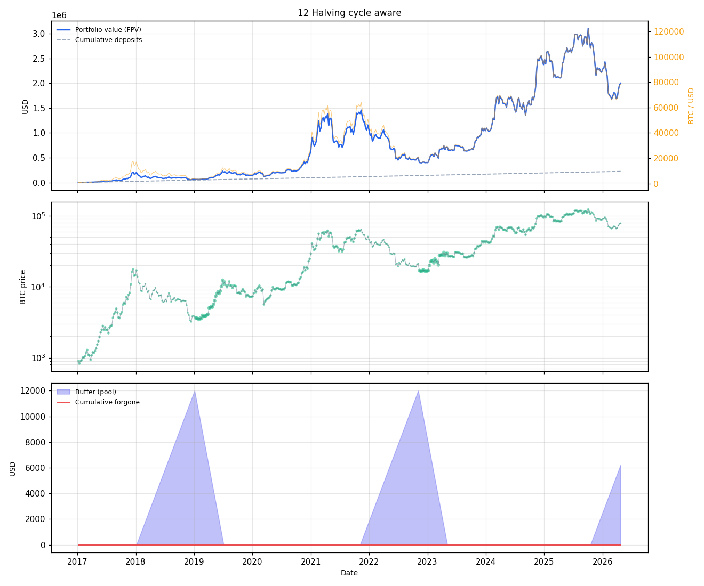
Лучший баланс · weekly
Halving-cycle aware (по фазам цикла)
IRR 44.91%
MaxDD 73.90%
IRR/DD 0.608
Протестировали разные стратегии DCA на четырёх активах — BTC, ETH, S&P 500 и Nasdaq-100: простое усреднение, покупки на просадках, трендовые фильтры, on-chain сигналы и резервные схемы. Задача — показать, где стратегия реально работает, а где только кажется умной.
На карточках — лучшая еженедельная стратегия по IRR/MaxDD для каждого актива. Это не универсальная рекомендация, а быстрый вход в данные.

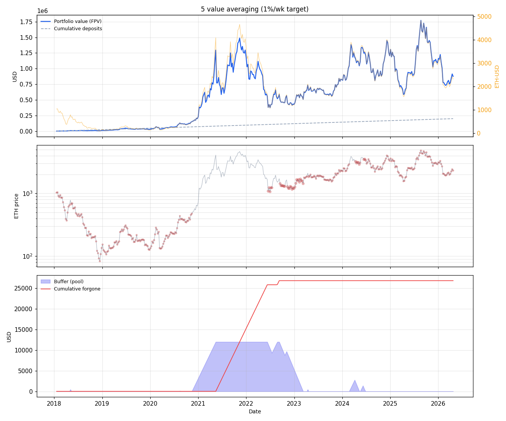
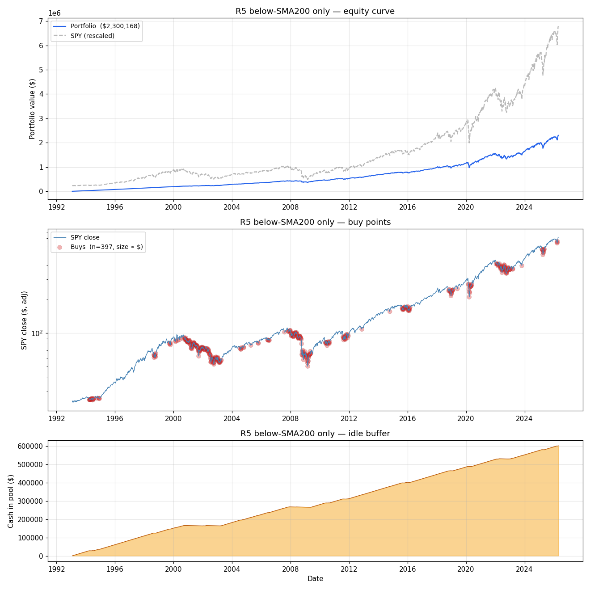
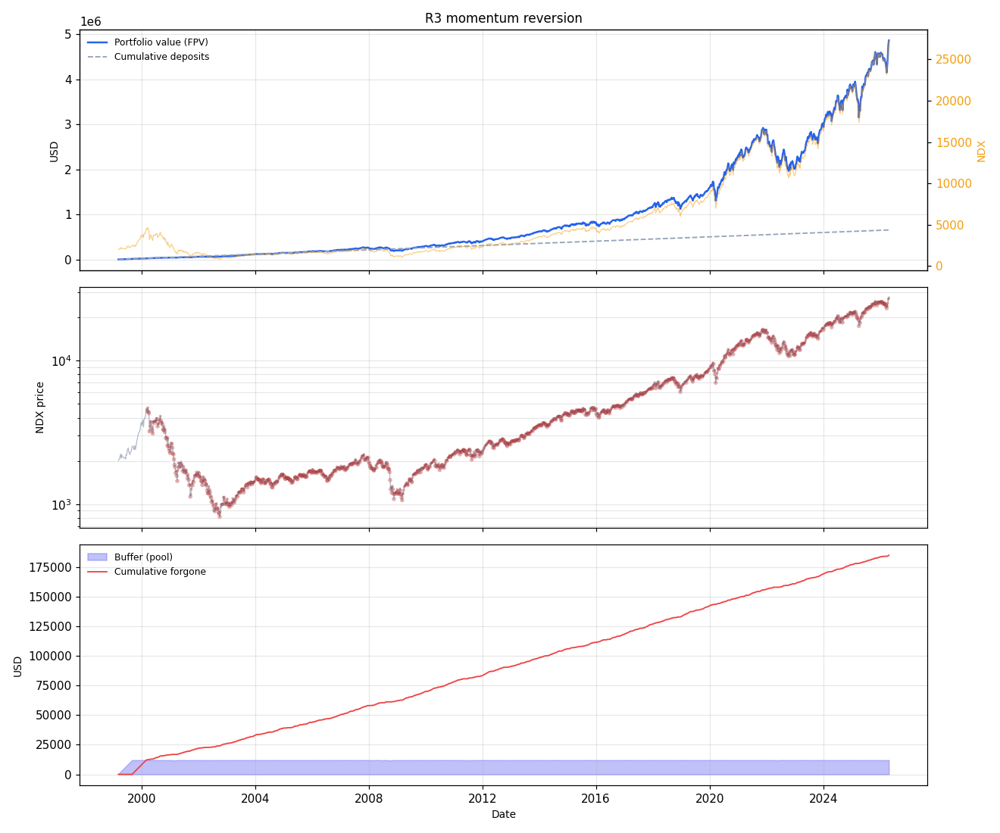
Все цифры берутся из catalog/catalog.yaml. Если стратегия не применима к активу, она не попадает в рейтинг.
Итоговая стоимость портфеля (FPV), годовой IRR и money multiple. Отвечают на вопрос: сколько в итоге получилось.
MaxDD показывает, насколько глубоко портфель проседал в худший момент. Часто это важнее красивой доходности — определяет, сможешь ли ты вообще удержать стратегию.
Invested — сколько денег реально дошло до актива. Некоторые стратегии красивы по метрикам, но месяцами держат кэш в стороне в ожидании сигнала.
BTC, ETH, SPY и NDX ведут себя по-разному. Поэтому сначала выбираем актив и частоту покупок, а уже потом сравниваем стратегии.
Если не хочешь копаться в таблицах — начни с подбора. Ответишь на 6 коротких вопросов, и мы покажем стратегию, которая подходит твоему уровню риска, готовности следить за сигналами и отношению к просадкам. Профиль сохраняется локально в браузере.
На странице рейтингов выбираешь актив и частоту покупок. Каждая вкладка сортирует одну и ту же таблицу по нужной метрике: FPV, IRR, MaxDD, MM, Invested или IRR/MaxDD. Никаких авто-рекомендаций — только данные.
Главное в DCA — придерживаться плана, когда рынок падает и хочется всё переиграть. Поэтому подбор учитывает не только доходность, но и риск, активность стратегии и твоё отношение к просадкам.
Хочу понятный план без сигналов. Покупаю регулярно, не пытаюсь ловить дно.
Мне комфортно держать резерв и докупать больше, когда рынок заметно дешевле.
Готов доверять on-chain, циклам или макро, если стратегия объяснима и проверена.
Главное — не попасть в глубокую просадку. Я согласен пожертвовать частью доходности.
Выбери рынок, частоту и метрику. Таблица отсортирует стратегии без авто-рекомендаций — только числа.
Одна строка — стратегия. Четыре колонки — активы (BTC / ETH / SPY / NDX). В каждой ячейке: IRR (годовая доходность), цифра в кружочке — уровень риска 1-5 (см. легенду ниже), и IRR/MaxDD — риск-скорректированный скор. Прочерк = стратегия не применима к этому активу. Клик по ячейке или названию — детальная панель с описанием и сравнением по всем активам.
Каждая метрика даёт свой топ-5 стратегий на каждом активе. Сначала смотрим читаемые карточки, а агрегированную audit-таблицу оставляем ниже для проверки.
Сортировка: FPV / IRR / MM / IRR/MaxDD — больше лучше. MaxDD — меньше лучше.
Raw vs Bot-eligible: если стратегия помечена
recommendation_policy.exclude_from_matching_assets — для исключённых активов
её ячейки educational-only, бот их не рекомендует по умолчанию. Такие ячейки подсвечены
полосатым фоном и не считаются
в «Всего» и в бейджах «чемпион» / «кандидат на выброс». Если raw-total отличается от
bot-eligible — raw показывается мелко в подписи под числом. На текущем snapshot
ни одной такой пометки нет, но механизм оставлен на случай будущих стратегий
с ограничениями применимости.
Колонка «Всего» = bot-eligible попадания (исключая educational-only ячейки). Максимум: 5 метрик × число не-educational активов, на которых стратегия применима. В матрице — место (1 🥇 / 2 🥈 / 3 🥉 / 4 / 5), пусто = вне топ-5, прочерк = не применимо, полосатый фон = educational-only (не в bot-eligible счёте).
Эти стратегии ни по одной из 5 метрик ни на одном из bot-рекомендуемых активов не попали в топ-5. Raw-попадания на educational-only ячейках (если они появятся в будущем — recommendation_policy.exclude_from_matching_assets) не считаются — бот такие активы не рекомендует по умолчанию. Повод подумать о снятии с каталога или перекалибровке.
Одна строка — стратегия. Четыре колонки — активы (BTC / ETH / SPY / NDX). В каждой ячейке: IRR (годовая доходность), цифра в кружочке — уровень риска 1-5 (см. легенду ниже), и IRR/MaxDD — риск-скорректированный скор. Прочерк = стратегия не применима к этому активу. Клик по ячейке или названию — детальная панель с описанием и сравнением по всем активам.
Каждая метрика даёт свой топ-5 стратегий на каждом активе. Сначала смотрим читаемые карточки, а агрегированную audit-таблицу оставляем ниже для проверки.
Сортировка: FPV / IRR / MM / IRR/MaxDD — больше лучше. MaxDD — меньше лучше.
Raw vs Bot-eligible: если стратегия помечена
recommendation_policy.exclude_from_matching_assets — для исключённых активов
её ячейки educational-only, бот их не рекомендует по умолчанию. Такие ячейки подсвечены
полосатым фоном и не считаются
в «Всего» и в бейджах «чемпион» / «кандидат на выброс». Если raw-total отличается от
bot-eligible — raw показывается мелко в подписи под числом. На текущем snapshot
ни одной такой пометки нет, но механизм оставлен на случай будущих стратегий
с ограничениями применимости.
Колонка «Всего» = bot-eligible попадания (исключая educational-only ячейки). Максимум: 5 метрик × число не-educational активов, на которых стратегия применима. В матрице — место (1 🥇 / 2 🥈 / 3 🥉 / 4 / 5), пусто = вне топ-5, прочерк = не применимо, полосатый фон = educational-only (не в bot-eligible счёте).
Эти стратегии ни по одной из 5 метрик ни на одном из bot-рекомендуемых активов не попали в топ-5. Raw-попадания на educational-only ячейках (если они появятся в будущем — recommendation_policy.exclude_from_matching_assets) не считаются — бот такие активы не рекомендует по умолчанию. Повод подумать о снятии с каталога или перекалибровке.
Above-SMA200 Only
Покупаю только когда цена выше 200-дневной SMA — не ловлю падающий нож
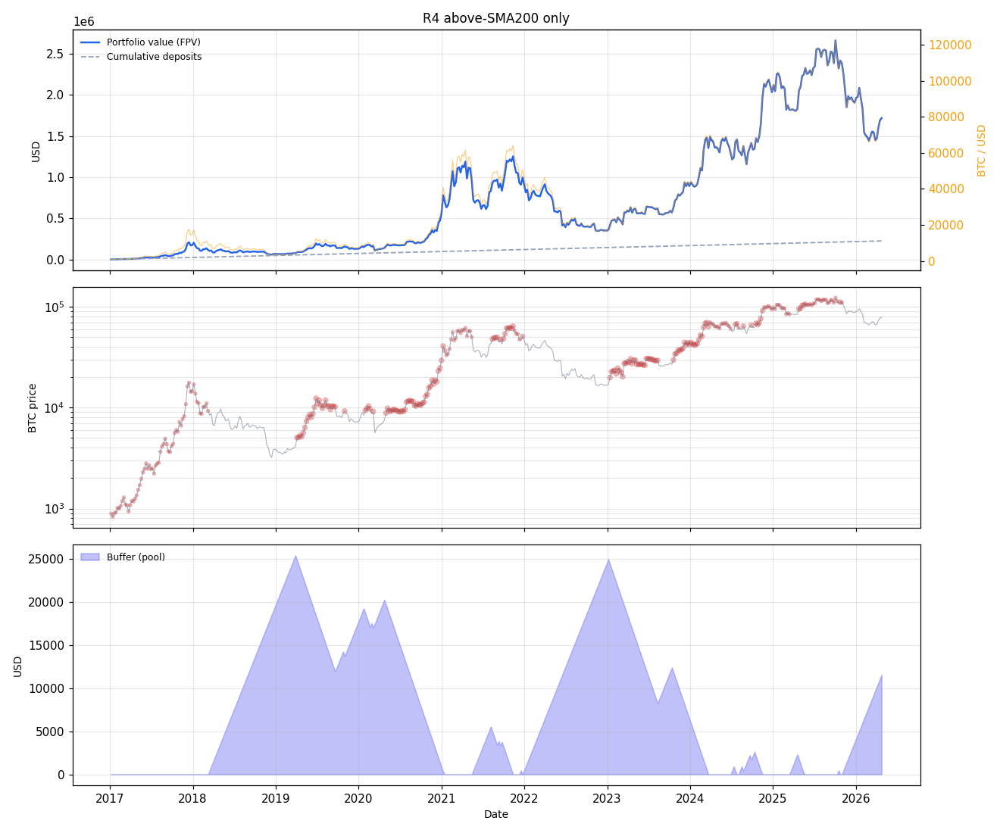
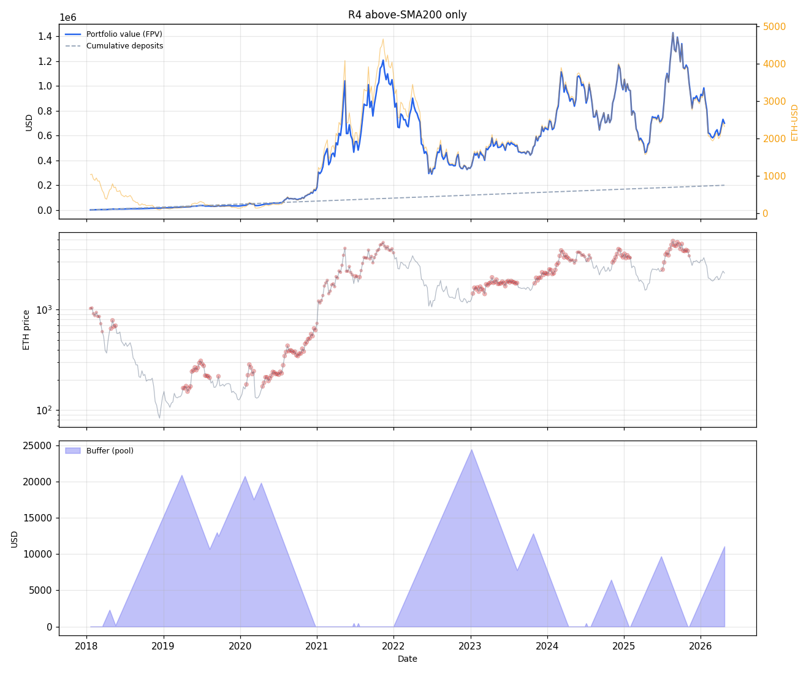
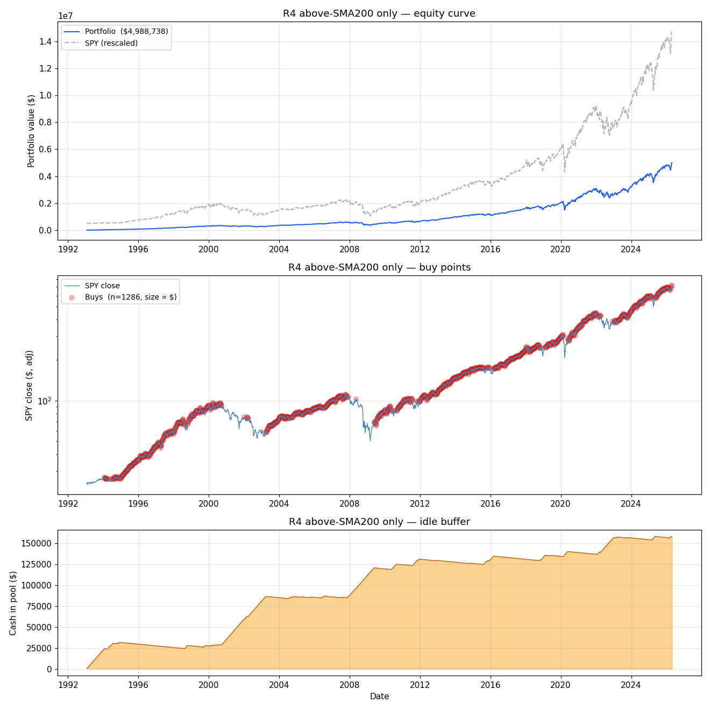
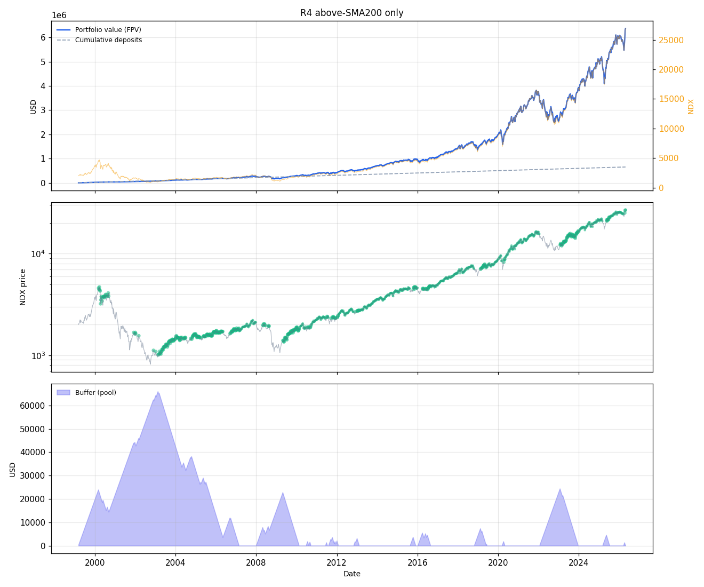
Trend-following: покупаем только когда цена выше 200-дневной SMA, иначе копим в пуле. Не ловим падающий нож, ждём подтверждения тренда. Хороший компромисс риск/доход — MaxDD обычно ниже чем у простого DCA за счёт того что не докупаем на затяжных медвежьих рынках. На длинной истории SPY даёт второй по FPV результат среди реалистичных стратегий с заметно ниже просадкой чем у B1.
Механика: Если close > SMA(200, daily) → покупаем базу. Иначе — 0, копим в буфере.
Above-SMA200 Only
Покупаю только когда цена выше 200-дневной SMA — не ловлю падающий нож
Trend-following: покупаем только когда цена выше 200-дневной SMA, иначе копим в пуле. Не ловим падающий нож, ждём подтверждения тренда. Хороший компромисс риск/доход — MaxDD обычно ниже чем у простого DCA за счёт того что не докупаем на затяжных медвежьих рынках. На длинной истории SPY даёт второй по FPV результат среди реалистичных стратегий с заметно ниже просадкой чем у B1.
Механика: Если close > SMA(200, daily) → покупаем базу. Иначе — 0, копим в буфере.
B1 Pure Weekly DCA
Каждую пятницу покупаю на базовую сумму — никаких условий, никаких решений
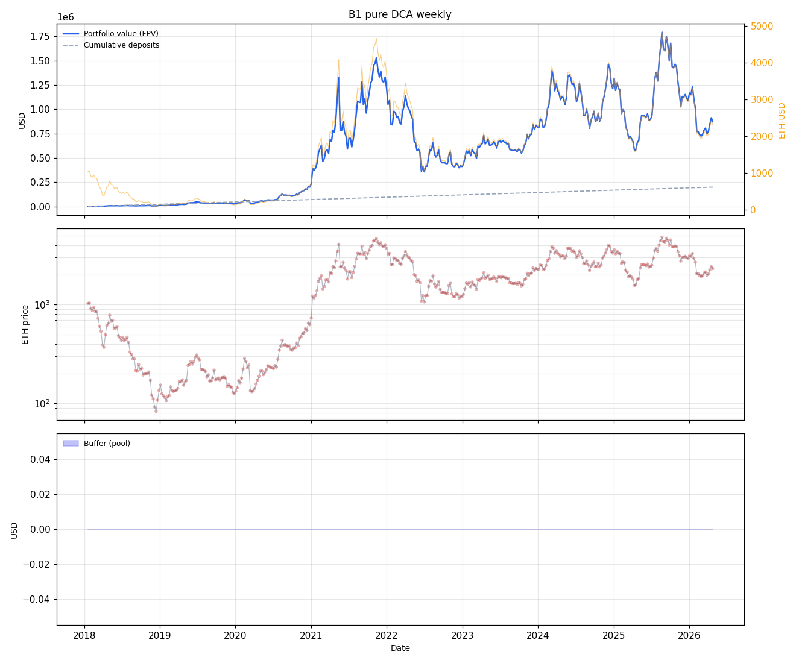
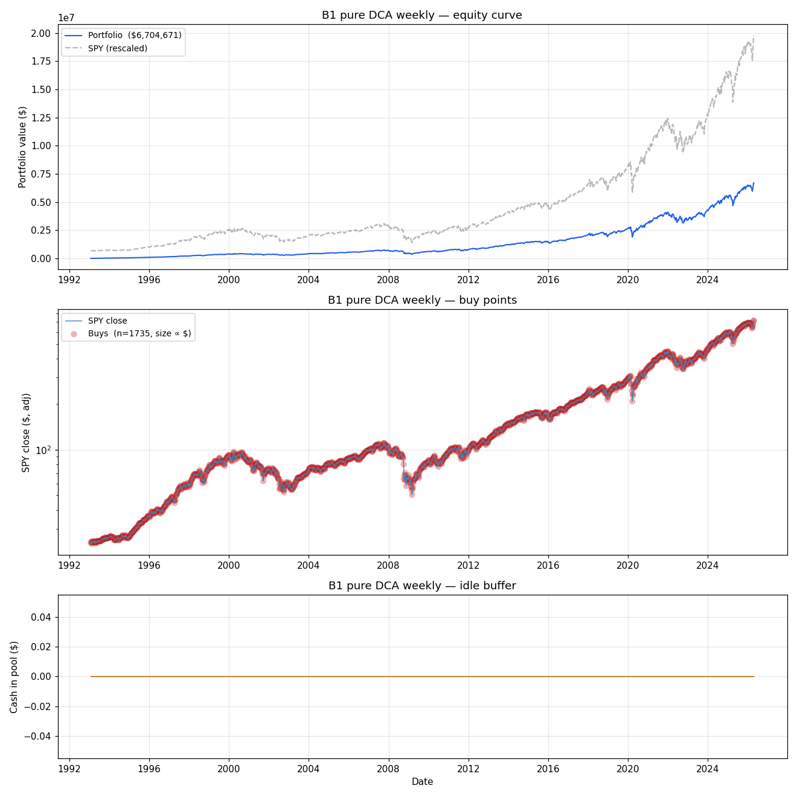
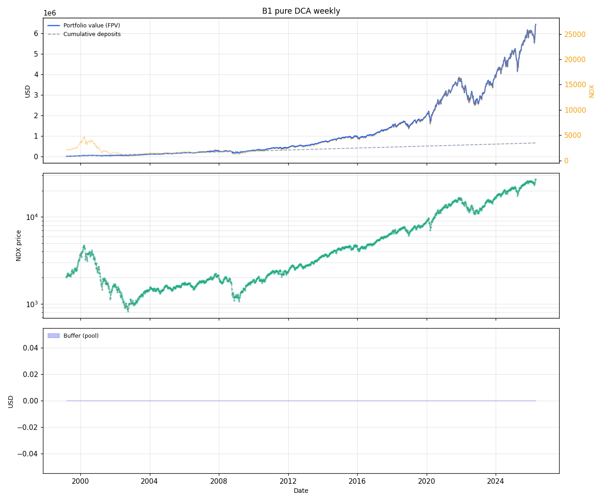
Самый простой бэнчмарк — каждую пятницу (или первую пятницу месяца при monthly cadence) покупаем на базовую сумму. Никаких сигналов, никакого буфера, никаких ожиданий. Нижний порог сложности. Во многих сценариях — верхний порог результата, потому что деньги всё время в рынке. Все остальные стратегии сравниваются с этой.
Механика: Каждый cadence-бар: купить на deposit_amount. Пул всегда 0.
B1 Pure Weekly DCA
Каждую пятницу покупаю на базовую сумму — никаких условий, никаких решений
Самый простой бэнчмарк — каждую пятницу (или первую пятницу месяца при monthly cadence) покупаем на базовую сумму. Никаких сигналов, никакого буфера, никаких ожиданий. Нижний порог сложности. Во многих сценариях — верхний порог результата, потому что деньги всё время в рынке. Все остальные стратегии сравниваются с этой.
Механика: Каждый cadence-бар: купить на deposit_amount. Пул всегда 0.
B2 Monthly Lump
Раз в месяц покупаю на $2000 — психологически проще, результат почти как у B1
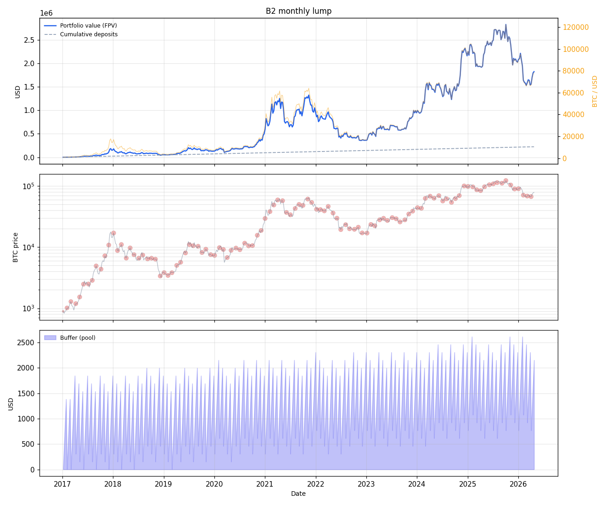
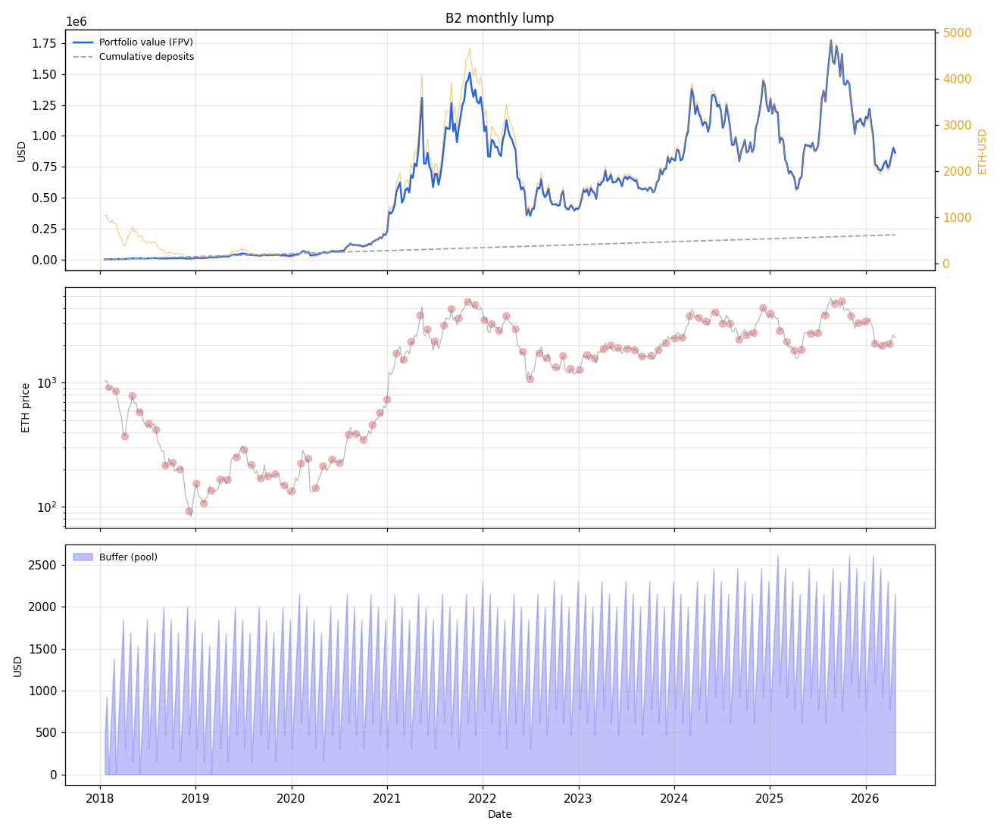
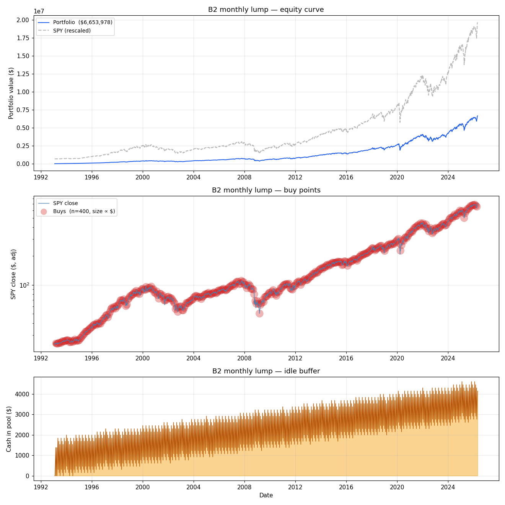
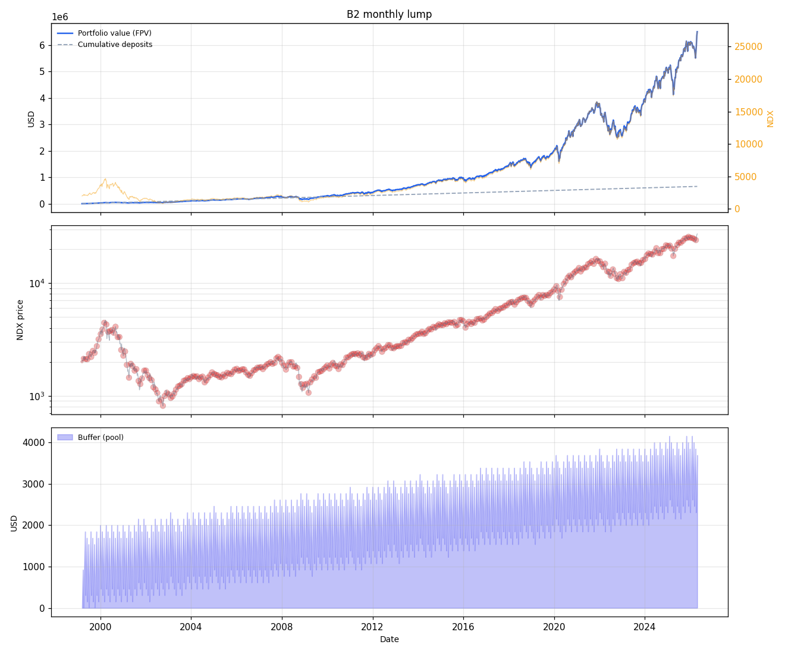
Monthly lump — раз в месяц в первую пятницу покупаем на $2000. В год те же $24k что и у B1. Психологически проще переводить раз в месяц, чем раз в неделю. Результат практически идентичен B1 по всем метрикам. Выбирайте по удобству, а не по ожидаемой доходности. В монтли каденсе стратегия вырождается в B1 (движок и так делает только первую пятницу), поэтому B2 доступна только в weekly каденсе.
Механика: Weekly cadence: накапливаем $461.54/нед в пул, в первую пятницу месяца тратим всё (~$2000).
Below-200WMA Only
Покупаю BTC ТОЛЬКО когда он ниже 200-недельной MA, иначе копим в буфере
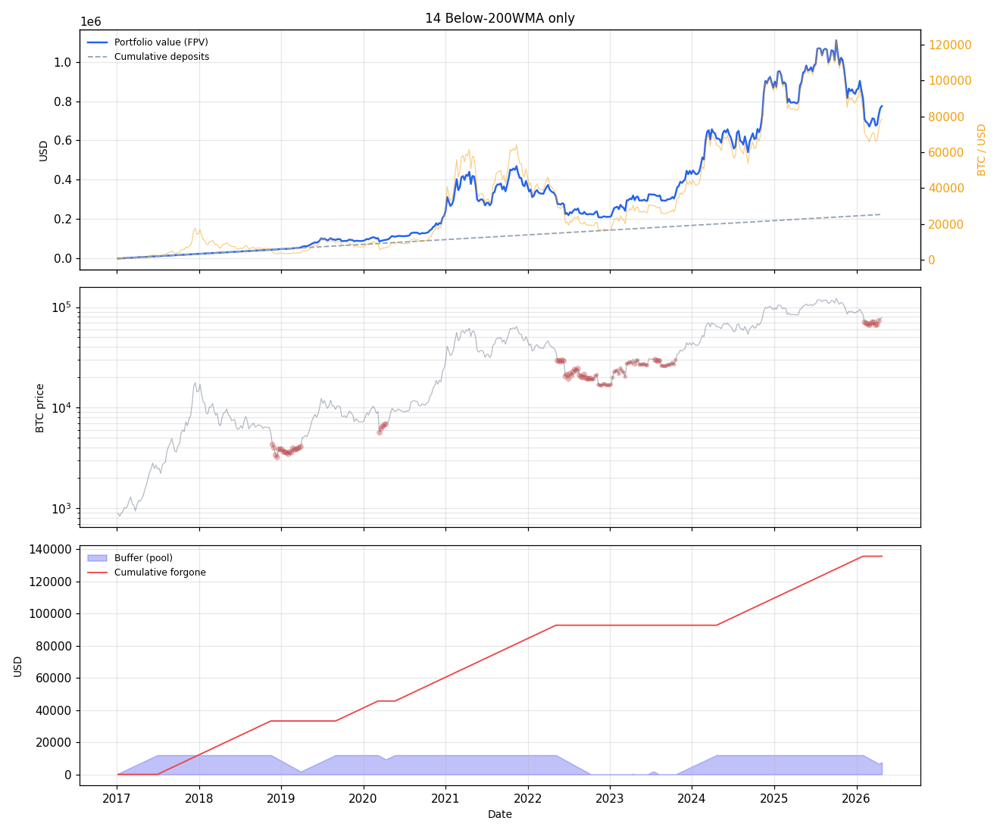
Экстремальный «покупаем только на дне». BTC находится выше 200WMA примерно 80% времени — значит стратегия большую часть времени сидит в кэше. Когда price < 200wma — покупаем базу + весь буфер (до cap). Буфер ограничен $12k — избыток выше этой границы «сгорает» (forgone). В BTC один из топов по IRR/MaxDD благодаря очень низкой просадке: даже с кучей forgone, те немногие покупки на дне 2022 дали огромный ROI. Психологически очень тяжёлая стратегия — годами ничего не делаешь.
Механика: Если price < WMA(200, weekly) → deploy буфер + депозит (cap). Иначе — 0 (overflow forgone).
Below-200WMA Only
Покупаю BTC ТОЛЬКО когда он ниже 200-недельной MA, иначе копим в буфере
Экстремальный «покупаем только на дне». BTC находится выше 200WMA примерно 80% времени — значит стратегия большую часть времени сидит в кэше. Когда price < 200wma — покупаем базу + весь буфер (до cap). Буфер ограничен $12k — избыток выше этой границы «сгорает» (forgone). В BTC один из топов по IRR/MaxDD благодаря очень низкой просадке: даже с кучей forgone, те немногие покупки на дне 2022 дали огромный ROI. Психологически очень тяжёлая стратегия — годами ничего не делаешь.
Механика: Если price < WMA(200, weekly) → deploy буфер + депозит (cap). Иначе — 0 (overflow forgone).
Below-SMA200 Only
Покупаю только когда цена НИЖЕ 200-дневной SMA — буквально buy the dip
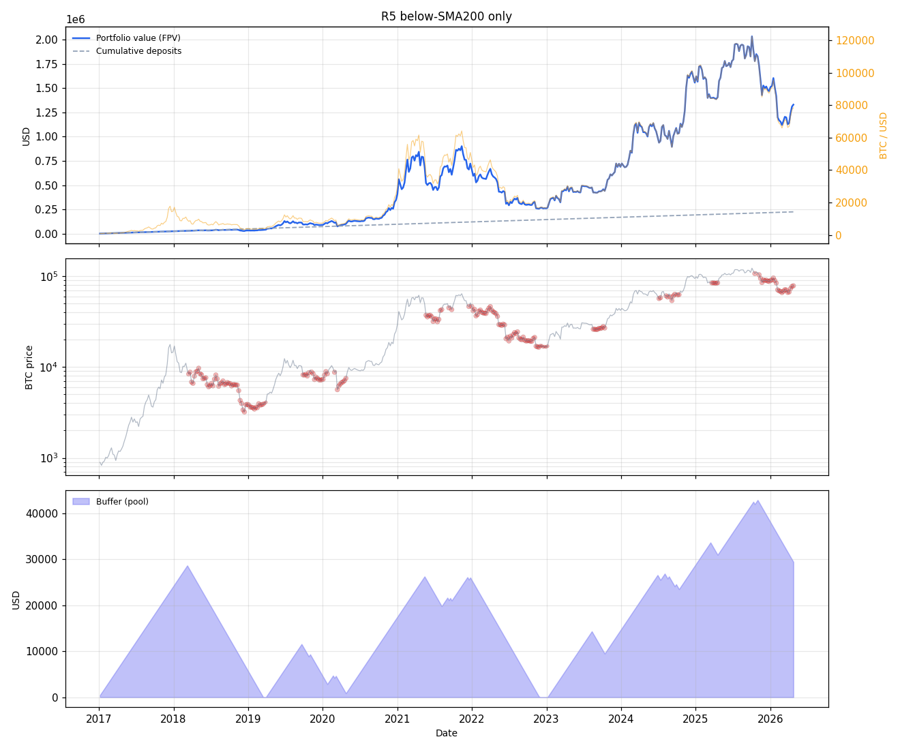
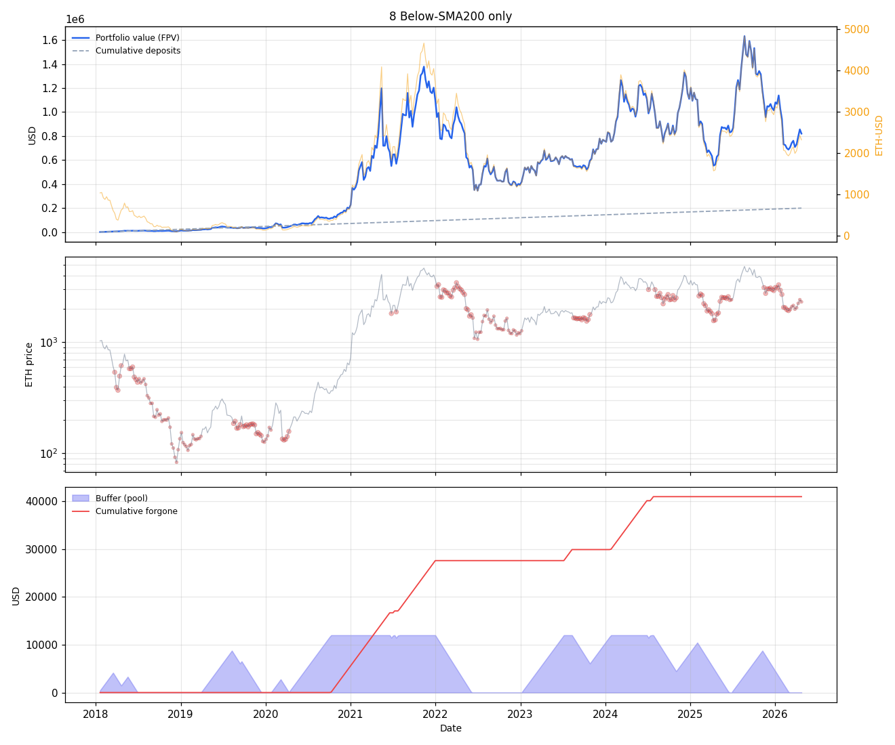
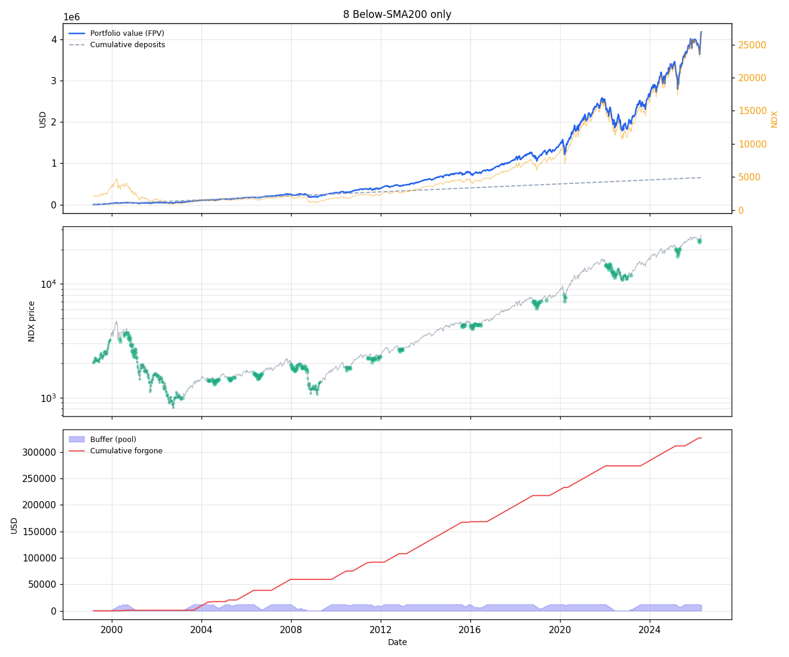
Зеркало above_sma200: покупаем ТОЛЬКО когда цена ниже 200-дневной SMA, иначе копим в пуле. Buy the dip буквально: только в медвежьих фазах. Актив находится ниже SMA200 примерно 20-30% времени — большую часть времени стратегия сидит в кэше. Лучший IRR/MaxDD на многих активах, MaxDD очень низкий (часто ниже 20%), но и FPV скромный потому что пропущена большая часть роста. Психологически тяжёлая — годами ничего не делаешь.
Механика: Если close < SMA(200, daily) → deploy буфер + депозит. Иначе — 0.
Below-SMA200 Only
Покупаю только когда цена НИЖЕ 200-дневной SMA — буквально buy the dip
Зеркало above_sma200: покупаем ТОЛЬКО когда цена ниже 200-дневной SMA, иначе копим в пуле. Buy the dip буквально: только в медвежьих фазах. Актив находится ниже SMA200 примерно 20-30% времени — большую часть времени стратегия сидит в кэше. Лучший IRR/MaxDD на многих активах, MaxDD очень низкий (часто ниже 20%), но и FPV скромный потому что пропущена большая часть роста. Психологически тяжёлая — годами ничего не делаешь.
Механика: Если close < SMA(200, daily) → deploy буфер + депозит. Иначе — 0.
Bi-Modal (core + reserve)
Половина денег идёт равномерно в рынок, вторая копится на катастрофу и стреляет на -60% DD
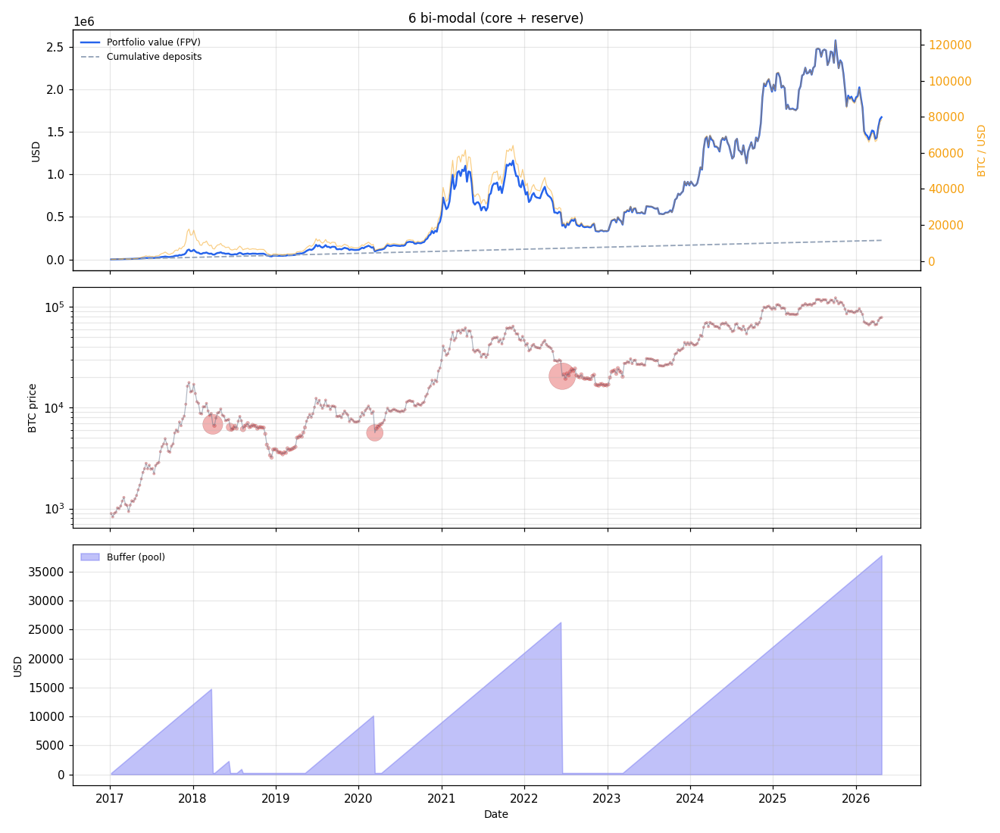
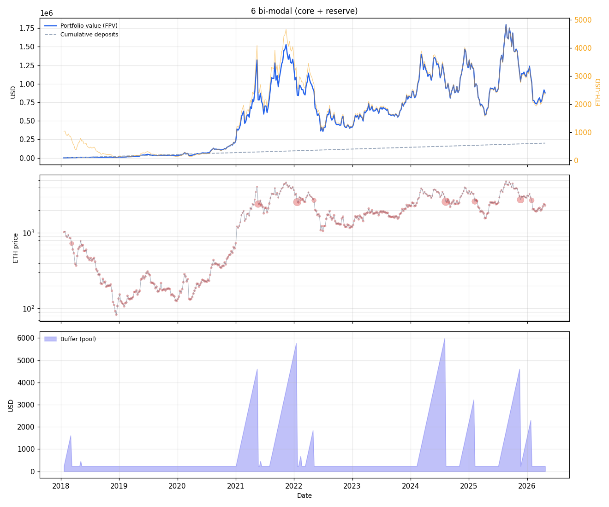
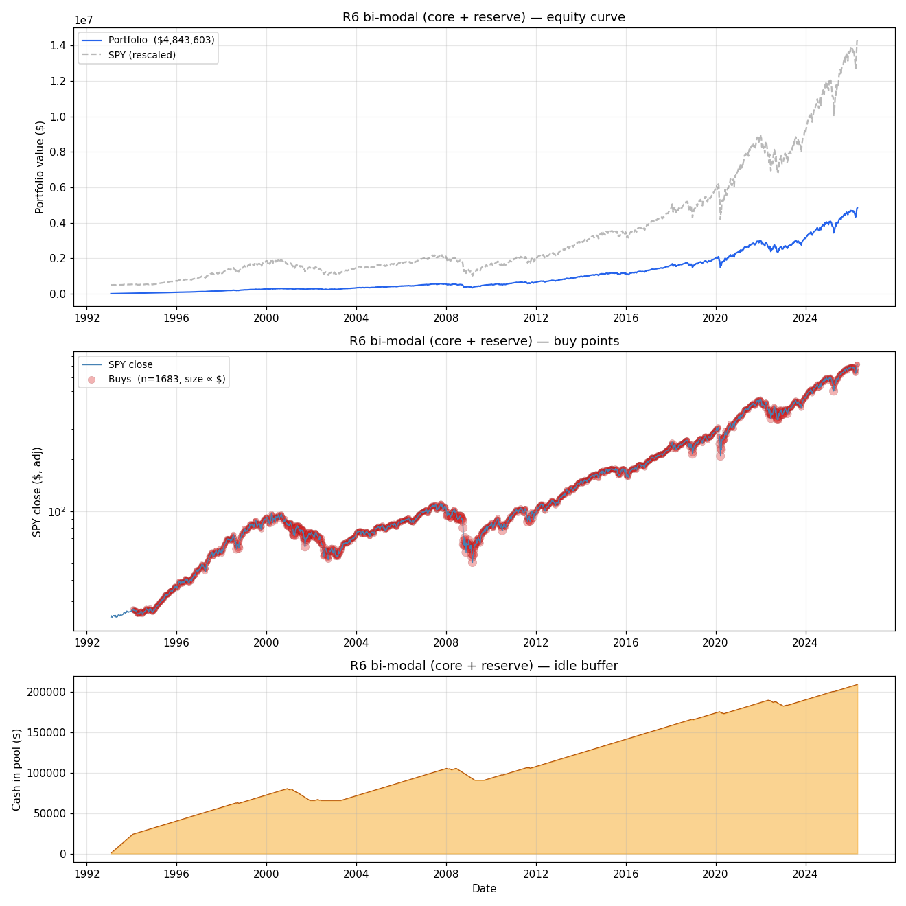
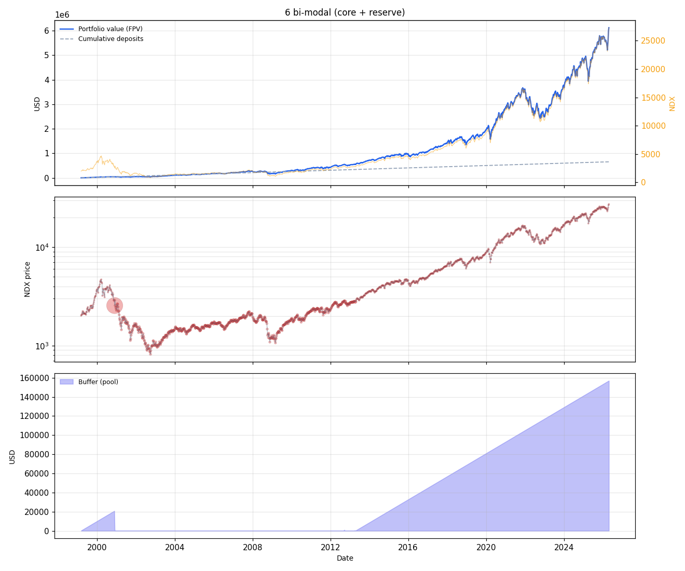
Два пула. Core: 50% депозита каждый бар — идёт в рынок безусловно (как мини-B1). Reserve: 50% депозита — копится без лимита в отдельном бакете. Когда drawdown достигает -60% от ATH, резерв разворачивается одной большой покупкой и сбрасывается. Даёт страховку на случай затяжного кризиса: на ETH-2018 (-94%) или BTC-2022 (-77%) резерв выстреливает на самом дне. На спокойных рынках вырождается в B1 с половинной скоростью.
Механика: Core: deposit/2 каждый бар. Reserve копит deposit/2. DD ≥ 60% от ATH → резерв разворачивается.
Bi-Modal (core + reserve)
Половина денег идёт равномерно в рынок, вторая копится на катастрофу и стреляет на -60% DD
Два пула. Core: 50% депозита каждый бар — идёт в рынок безусловно (как мини-B1). Reserve: 50% депозита — копится без лимита в отдельном бакете. Когда drawdown достигает -60% от ATH, резерв разворачивается одной большой покупкой и сбрасывается. Даёт страховку на случай затяжного кризиса: на ETH-2018 (-94%) или BTC-2022 (-77%) резерв выстреливает на самом дне. На спокойных рынках вырождается в B1 с половинной скоростью.
Механика: Core: deposit/2 каждый бар. Reserve копит deposit/2. DD ≥ 60% от ATH → резерв разворачивается.
CAPE-Gated
Дешёвая валюация (CAPE<15) — покупаю 2x. Пузырь (CAPE≥45) — 0.25x
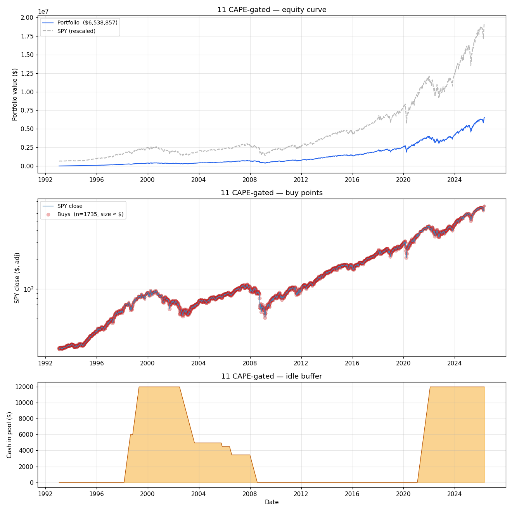
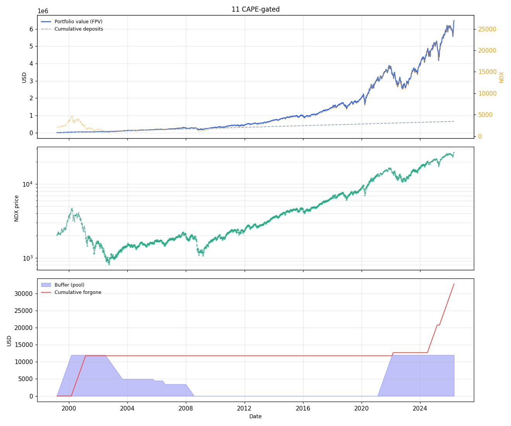
Shiller CAPE (Cyclically-Adjusted P/E) — классический метрик долгосрочной дороговизны американского рынка. CAPE > 40 исторически маркирует пузыри (dotcom 44, 2021 38). CAPE < 15 — исторические дна (1982, 2009). Мультипликаторы: <15 — 2x дешёвка, [15,25) — 1.25x, [25,35) — 1x нейтраль, [35,45) — 0.5x пузырь, ≥45 — 0.25x dotcom-tier. CAPE базируется на S&P 500, но применяется к NDX тоже — корреляция высокая. Данные monthly из multpl.com.
Механика: Множитель × база по бакетам CAPE (Shiller P/E10).
CAPE-Gated
Дешёвая валюация (CAPE<15) — покупаю 2x. Пузырь (CAPE≥45) — 0.25x
Shiller CAPE (Cyclically-Adjusted P/E) — классический метрик долгосрочной дороговизны американского рынка. CAPE > 40 исторически маркирует пузыри (dotcom 44, 2021 38). CAPE < 15 — исторические дна (1982, 2009). Мультипликаторы: <15 — 2x дешёвка, [15,25) — 1.25x, [25,35) — 1x нейтраль, [35,45) — 0.5x пузырь, ≥45 — 0.25x dotcom-tier. CAPE базируется на S&P 500, но применяется к NDX тоже — корреляция высокая. Данные monthly из multpl.com.
Механика: Множитель × база по бакетам CAPE (Shiller P/E10).
Concave DCA (52w-based)
Реагирую агрессивно даже на мелкие просадки — не жду обвала
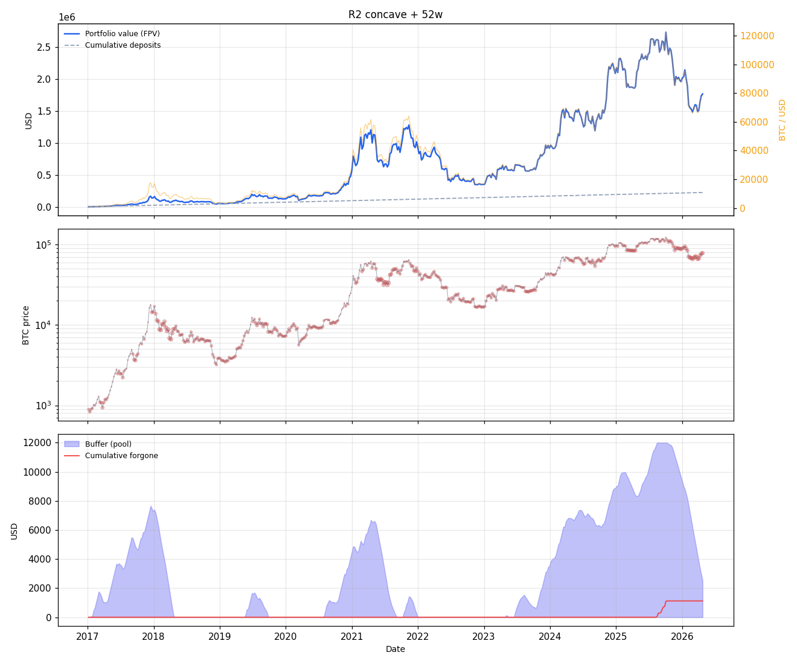
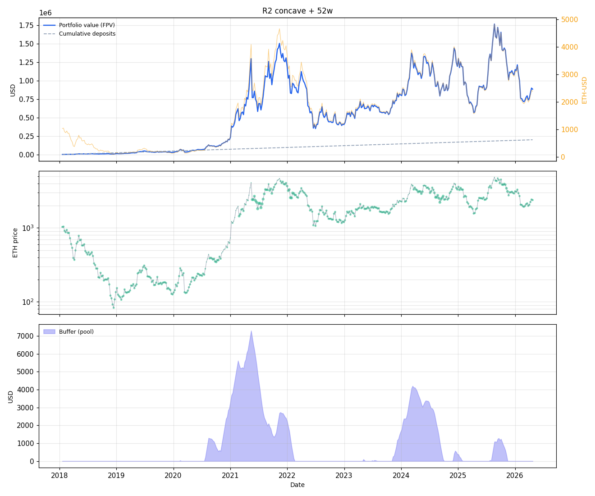
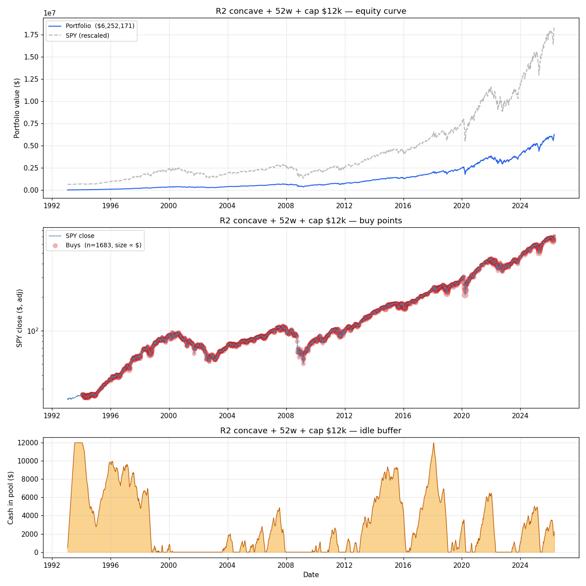
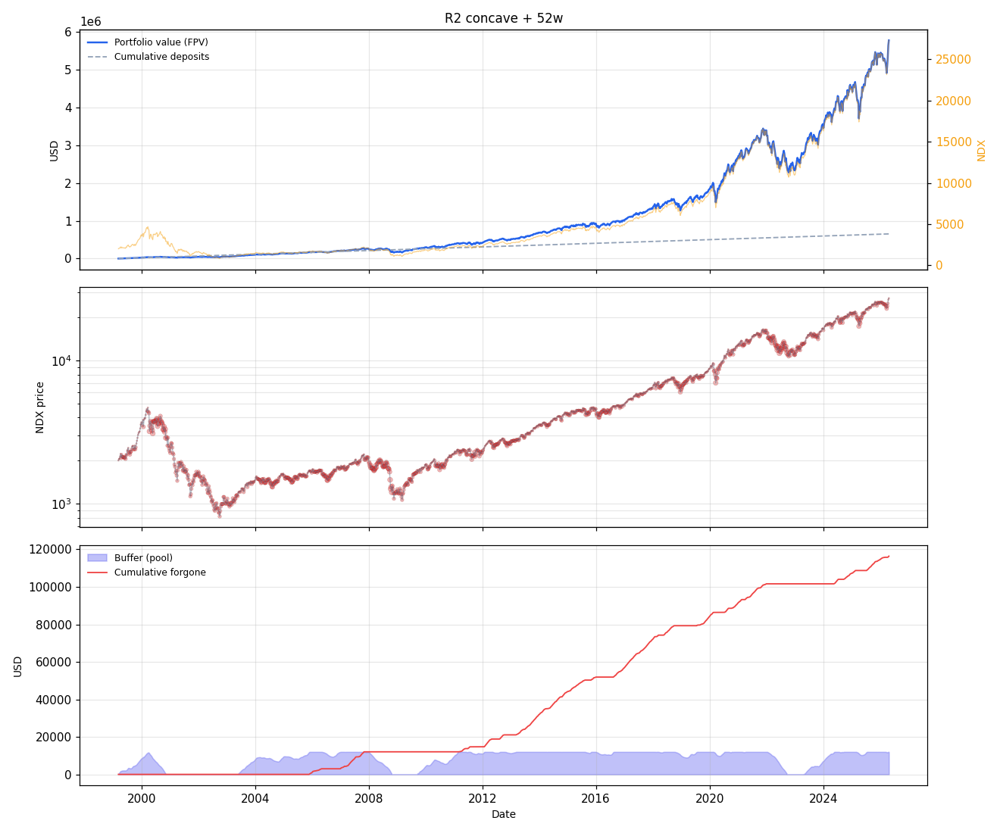
Вогнутая формула (sqrt-shape): быстро выходит на полную покупку уже при неглубокой просадке. Зеркальная гипотеза к convex: может быть, срочно реагировать надо на небольшие просадки, а не ждать -30% или -50%. Уже при DD около full_scale даёт максимум, дальнейшие просадки не увеличивают размер. Быстрее расходует пул на мелких просадках — меньше cash drag, но и меньше запаса на крупные кризисы.
Механика: buy = clip(min + (max − min)·√(DD/full_scale), min, max) — корневая шкала
Concave DCA (52w-based)
Реагирую агрессивно даже на мелкие просадки — не жду обвала
Вогнутая формула (sqrt-shape): быстро выходит на полную покупку уже при неглубокой просадке. Зеркальная гипотеза к convex: может быть, срочно реагировать надо на небольшие просадки, а не ждать -30% или -50%. Уже при DD около full_scale даёт максимум, дальнейшие просадки не увеличивают размер. Быстрее расходует пул на мелких просадках — меньше cash drag, но и меньше запаса на крупные кризисы.
Механика: buy = clip(min + (max − min)·√(DD/full_scale), min, max) — корневая шкала
Smart DCA (52w-based, convex)
Покупаю регулярно, но на просадках от 52-недельного максимума — больше
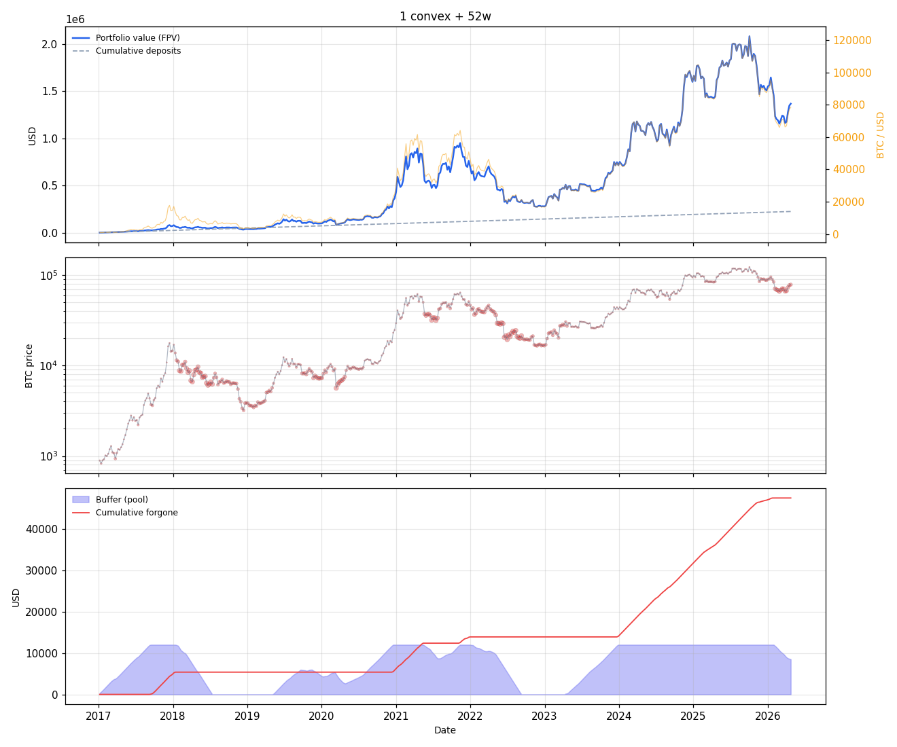
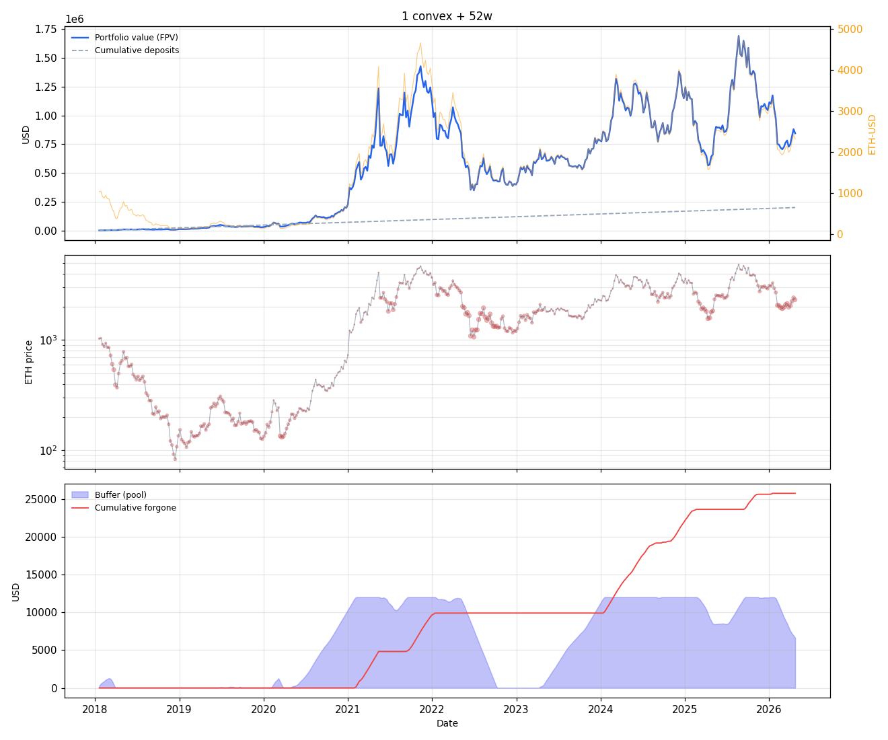
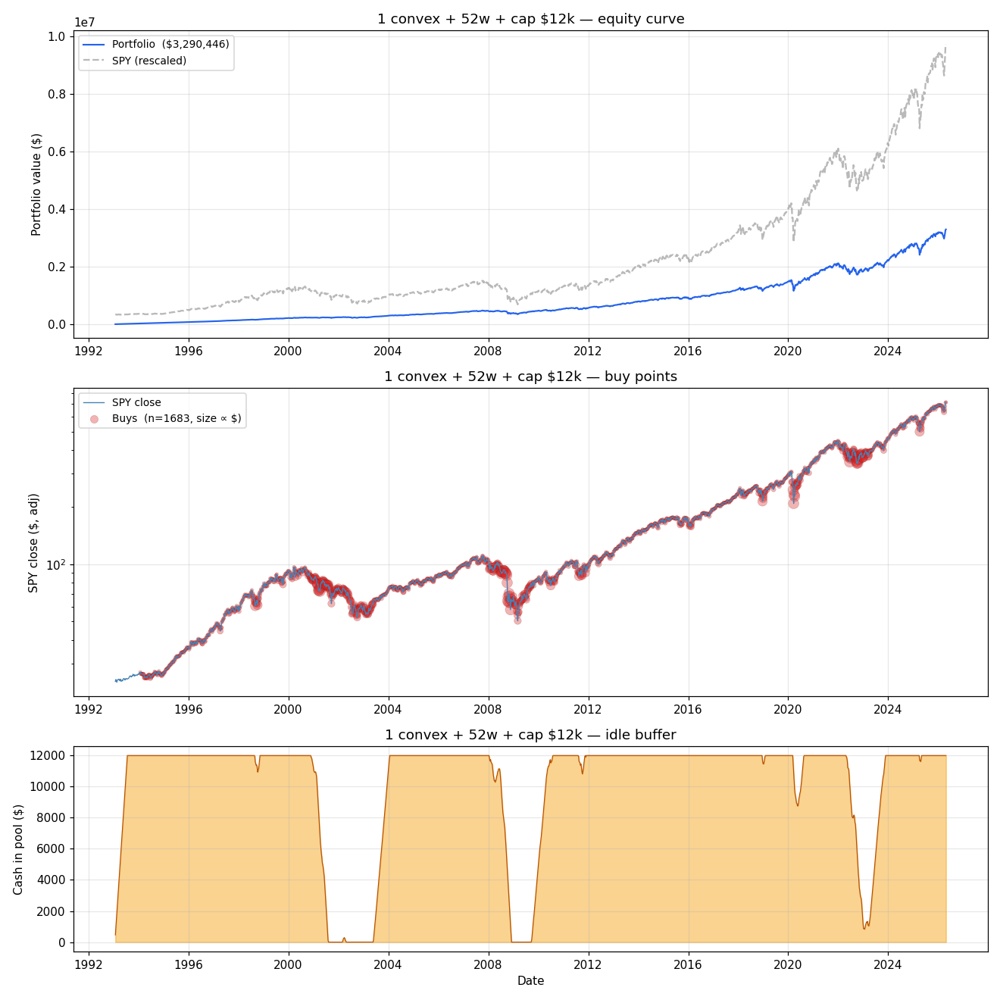
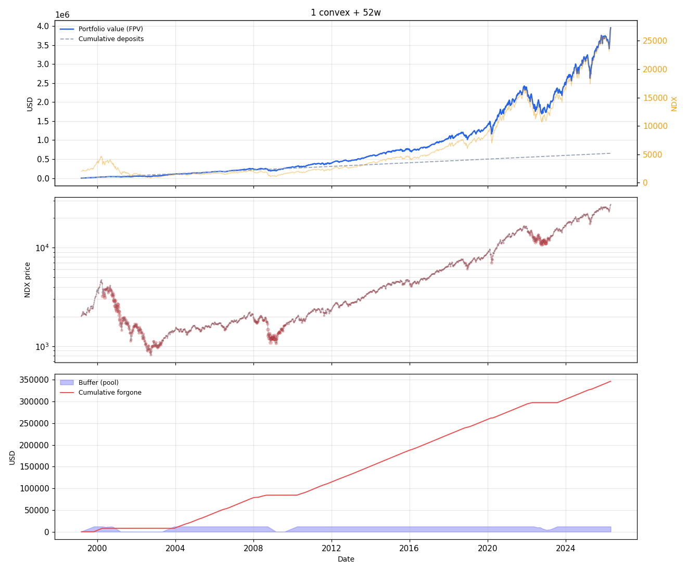
Convex DCA: покупка растёт квадратично от глубины просадки от 52-недельного максимума. Чем глубже коррекция, тем больше покупать. Квадратичная функция даёт плавный вход при мелких коррекциях и агрессивный на больших. На ровном рынке покупает по минимуму, накапливает буфер. На -50% (BTC) / -60% (ETH) / -20% (SPY) / -35% (NDX) — максимальная покупка (полный cap).
Механика: buy = clip(min + (max − min)·(DD/full_scale)², min, max), DD = (52w high − цена) / 52w high
Smart DCA (52w-based, convex)
Покупаю регулярно, но на просадках от 52-недельного максимума — больше
Convex DCA: покупка растёт квадратично от глубины просадки от 52-недельного максимума. Чем глубже коррекция, тем больше покупать. Квадратичная функция даёт плавный вход при мелких коррекциях и агрессивный на больших. На ровном рынке покупает по минимуму, накапливает буфер. На -50% (BTC) / -60% (ETH) / -20% (SPY) / -35% (NDX) — максимальная покупка (полный cap).
Механика: buy = clip(min + (max − min)·(DD/full_scale)², min, max), DD = (52w high − цена) / 52w high
Smart DCA (ATH-based, convex)
Покупаю регулярно, но на просадках от исторического максимума — больше
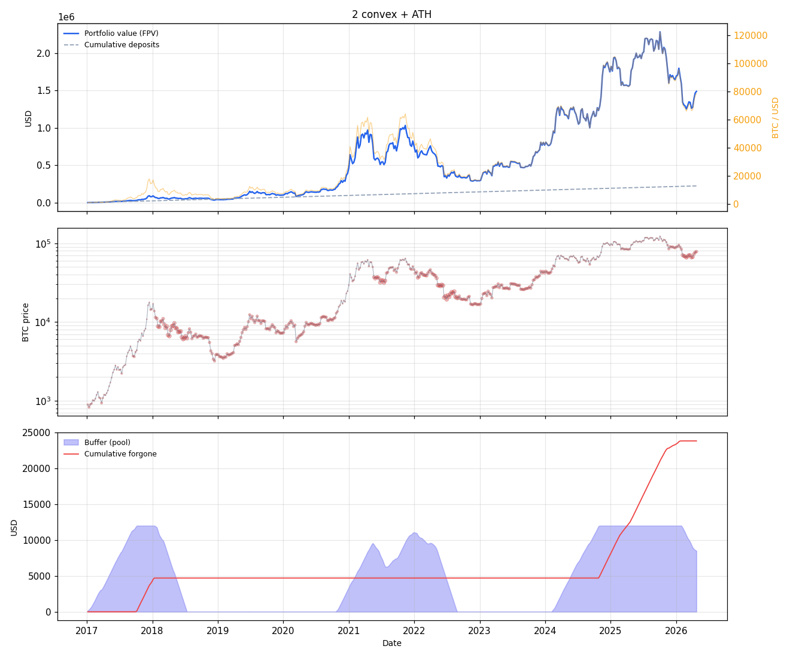
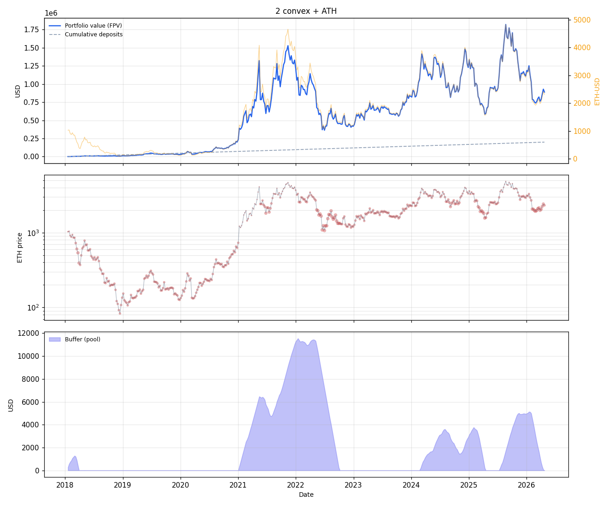
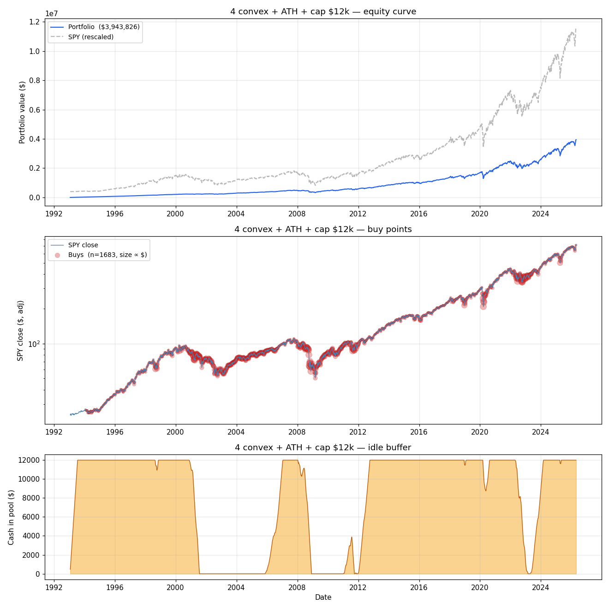
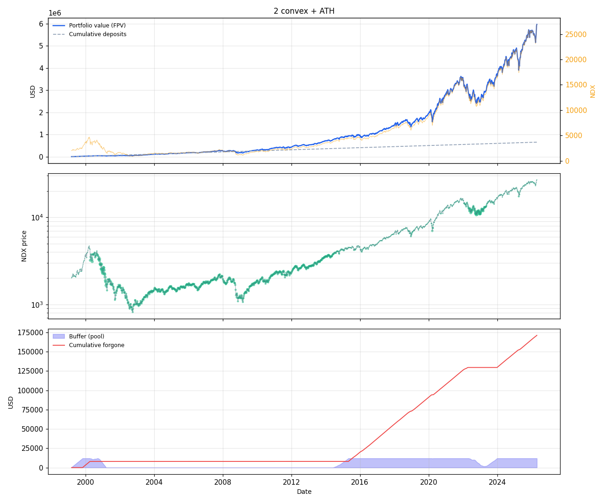
То же что и convex_52w, но просадка считается от all-time high, а не от 52w high. ATH-reference «помнит» старые пики: после обновления ATH стратегия будет долго держать низкий размер покупки, накапливая буфер на следующий медвежий рынок. Квадратичная шкала: на ровном рынке у хая — минимум, на -50% (BTC) / -60% (ETH) / -20% (SPY) / -35% (NDX) — максимум (полный cap).
Механика: buy = clip(min + (max − min)·(DD/full_scale)², min, max), DD = (ATH − цена) / ATH
Smart DCA (ATH-based, convex)
Покупаю регулярно, но на просадках от исторического максимума — больше
То же что и convex_52w, но просадка считается от all-time high, а не от 52w high. ATH-reference «помнит» старые пики: после обновления ATH стратегия будет долго держать низкий размер покупки, накапливая буфер на следующий медвежий рынок. Квадратичная шкала: на ровном рынке у хая — минимум, на -50% (BTC) / -60% (ETH) / -20% (SPY) / -35% (NDX) — максимум (полный cap).
Механика: buy = clip(min + (max − min)·(DD/full_scale)², min, max), DD = (ATH − цена) / ATH
ETH/BTC Ratio Gated
Когда ETH дёшев относительно BTC — покупаю ETH больше. Когда дорог — копим буфер
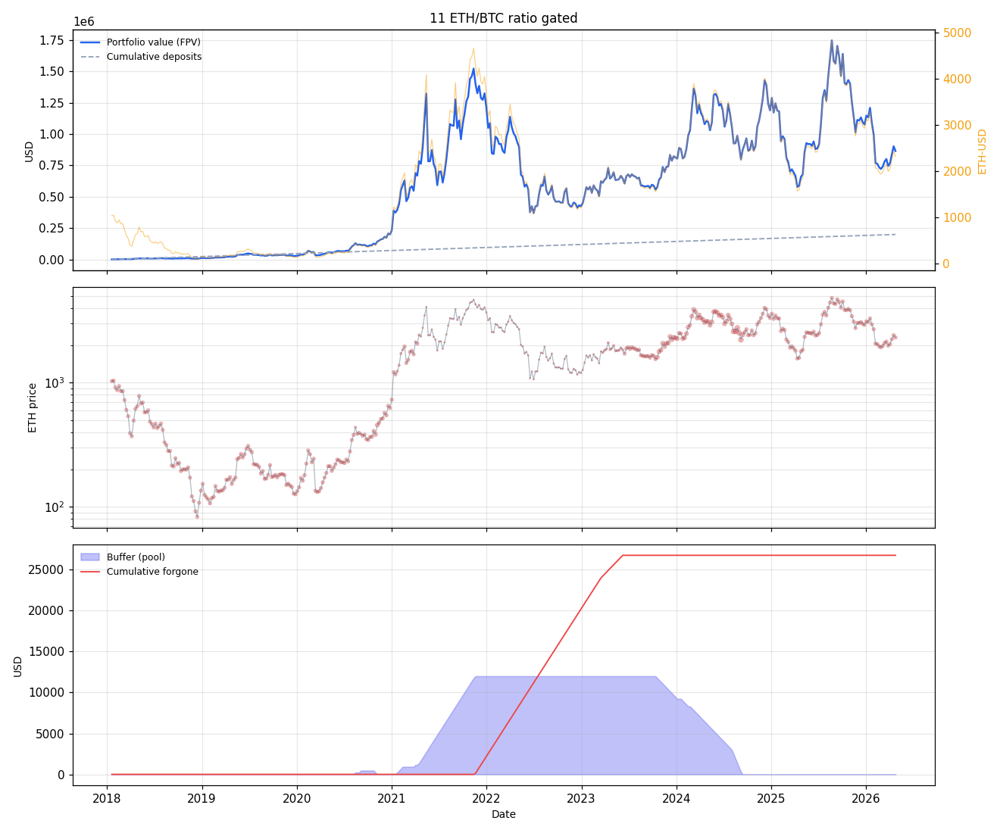
Межрыночный сигнал без аналогов в SPX/NDX. Считаем rel = today_ETHBTC / median(ETHBTC, 200w). Медиана за 200 нед нормализует исторический дрейф ratio. Когда ETH дёшев vs BTC (rel<0.70) — покупаем больше (2.5x); когда дорог (rel≥1.40) — копим буфер (0.25x). Промежуточные зоны: [0.70,0.90) — 1.5x, [0.90,1.10) — 1x нейтраль, [1.10,1.40) — 0.5x. Уникальный для ETH сигнал — ловит «ETH season» когда ETH перформирует хуже BTC (покупай больше) vs лучше (копи). Warmup ~74 нед пока набирается 200w медиана.
Механика: rel = ETHBTC_today / median(ETHBTC, 200w). Множитель × база по зонам rel.
ETH/BTC Ratio Gated
Когда ETH дёшев относительно BTC — покупаю ETH больше. Когда дорог — копим буфер
Межрыночный сигнал без аналогов в SPX/NDX. Считаем rel = today_ETHBTC / median(ETHBTC, 200w). Медиана за 200 нед нормализует исторический дрейф ratio. Когда ETH дёшев vs BTC (rel<0.70) — покупаем больше (2.5x); когда дорог (rel≥1.40) — копим буфер (0.25x). Промежуточные зоны: [0.70,0.90) — 1.5x, [0.90,1.10) — 1x нейтраль, [1.10,1.40) — 0.5x. Уникальный для ETH сигнал — ловит «ETH season» когда ETH перформирует хуже BTC (покупай больше) vs лучше (копи). Warmup ~74 нед пока набирается 200w медиана.
Механика: rel = ETHBTC_today / median(ETHBTC, 200w). Множитель × база по зонам rel.
Halving Cycle Aware
Подстраиваюсь под 4-летний цикл BTC: после halving копим, на медвежке — разворачиваем
4-летний halving-цикл: накопление → буллран → топ → бэр → следующий halving. Если паттерн устойчив, известный график halving-ов даёт форвард-сигнал. Считаем месяцы с последнего halving (2012-11, 2016-07, 2020-05, 2024-04). Мультипликаторы: 0-6 мес — 1x, 6-18 мес (буллран) — 1.5x, 18-30 мес (пик-зона) — 0.5x, 30-48 мес (медвежка) — 2x. На BTC-MAIN один из лучших «чисто-детерминистических» сигналов: стартовал в 18-30м после halving 2020-05 (0.5x, копим буфер), потом 30-48м (2x, разворачиваем на дне 2022).
Механика: По месяцам с последнего halving: [0-6): 1x, [6-18): 1.5x, [18-30): 0.5x, [30-48): 2x.
Halving Cycle Aware
Подстраиваюсь под 4-летний цикл BTC: после halving копим, на медвежке — разворачиваем
4-летний halving-цикл: накопление → буллран → топ → бэр → следующий halving. Если паттерн устойчив, известный график halving-ов даёт форвард-сигнал. Считаем месяцы с последнего halving (2012-11, 2016-07, 2020-05, 2024-04). Мультипликаторы: 0-6 мес — 1x, 6-18 мес (буллран) — 1.5x, 18-30 мес (пик-зона) — 0.5x, 30-48 мес (медвежка) — 2x. На BTC-MAIN один из лучших «чисто-детерминистических» сигналов: стартовал в 18-30м после halving 2020-05 (0.5x, копим буфер), потом 30-48м (2x, разворачиваем на дне 2022).
Механика: По месяцам с последнего halving: [0-6): 1x, [6-18): 1.5x, [18-30): 0.5x, [30-48): 2x.
Linear DCA (52w-based)
Покупаю больше на просадках, но без квадратичной агрессии — ровная линейная шкала
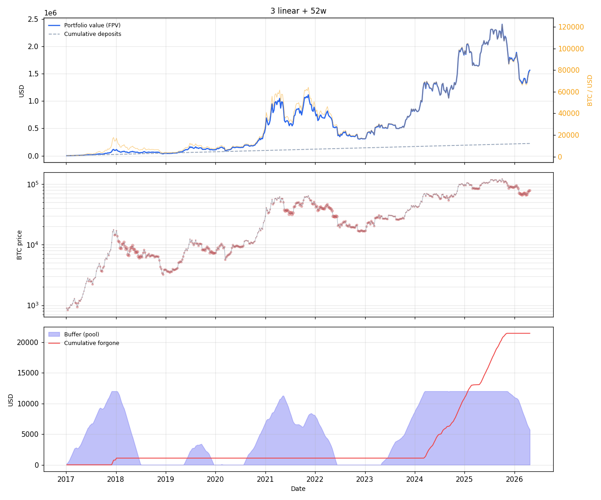
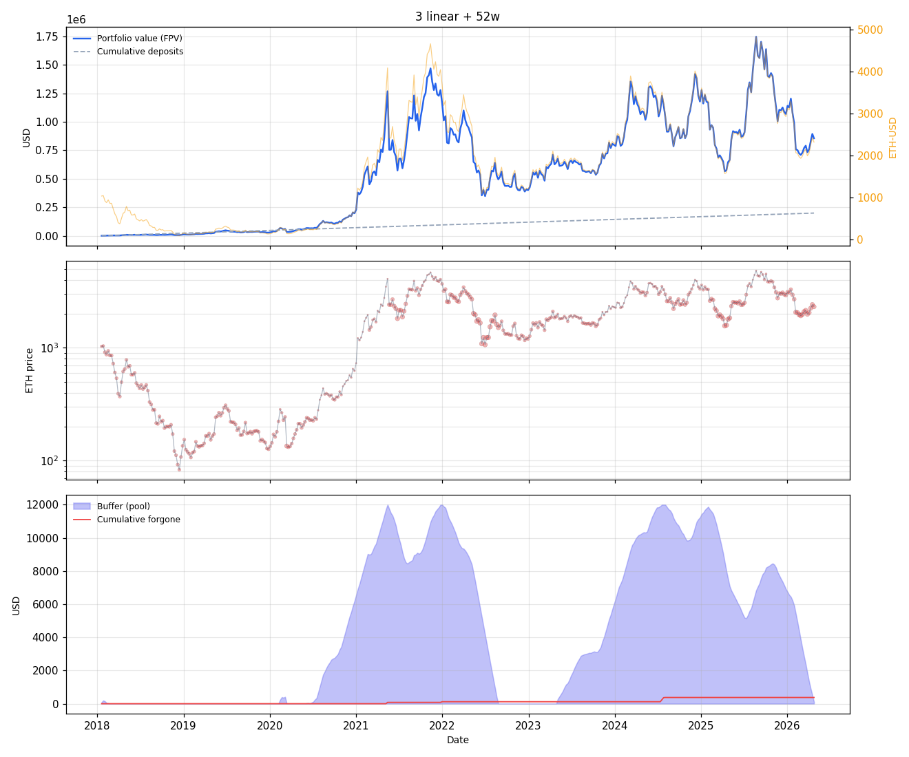
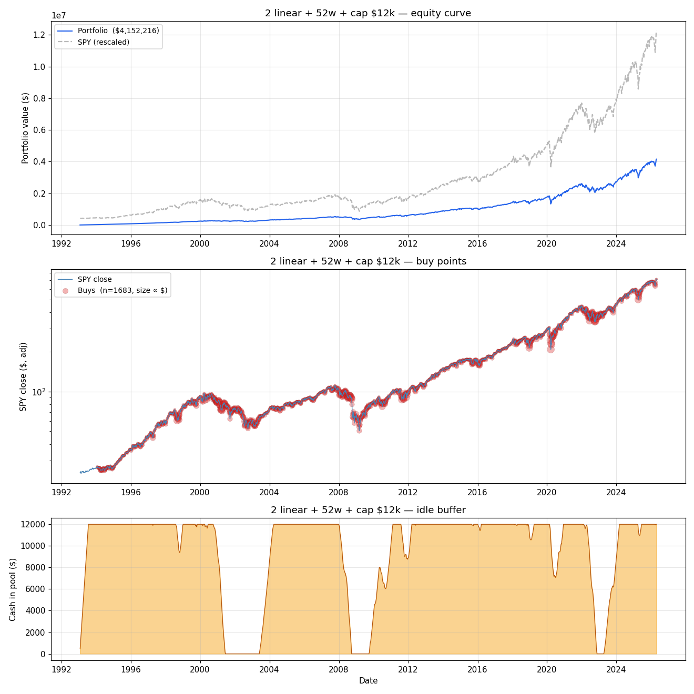
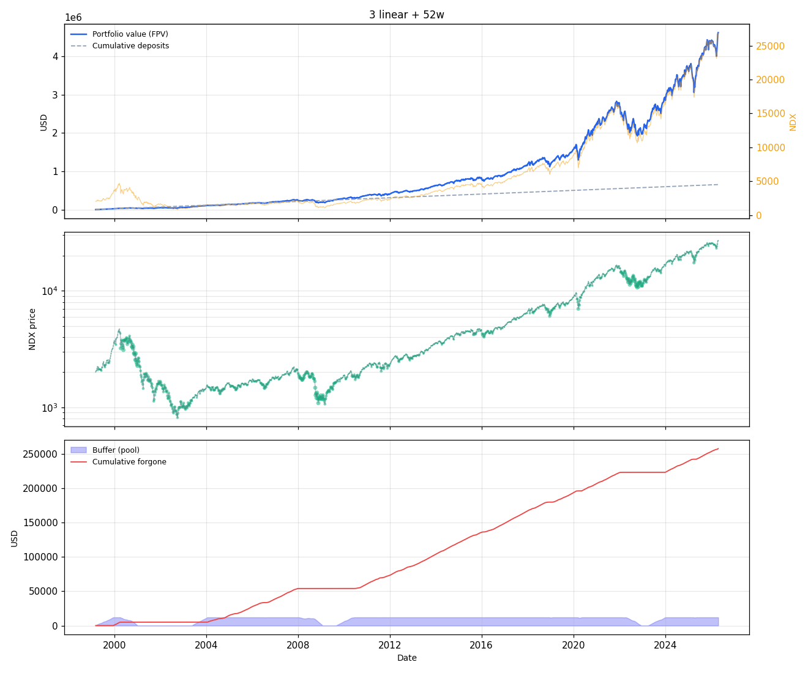
Linear DCA: покупка растёт линейно от просадки, не квадратично. Линейная функция — компромисс между convex и простым DCA. Реагирует раньше чем convex на неглубокие просадки, но менее агрессивно на глубоких. Промежуточный профиль риска — не так сильно копит буфер на бычьих рынках как convex, но и не так агрессивно разворачивает его на дне.
Механика: buy = clip(min + (max − min)·(DD/full_scale), min, max), DD = от 52w high
Linear DCA (52w-based)
Покупаю больше на просадках, но без квадратичной агрессии — ровная линейная шкала
Linear DCA: покупка растёт линейно от просадки, не квадратично. Линейная функция — компромисс между convex и простым DCA. Реагирует раньше чем convex на неглубокие просадки, но менее агрессивно на глубоких. Промежуточный профиль риска — не так сильно копит буфер на бычьих рынках как convex, но и не так агрессивно разворачивает его на дне.
Механика: buy = clip(min + (max − min)·(DD/full_scale), min, max), DD = от 52w high
Mayer Multiple
Классический индикатор: Mayer Multiple < 0.8 — покупаю 2x, > 2.4 — пауза
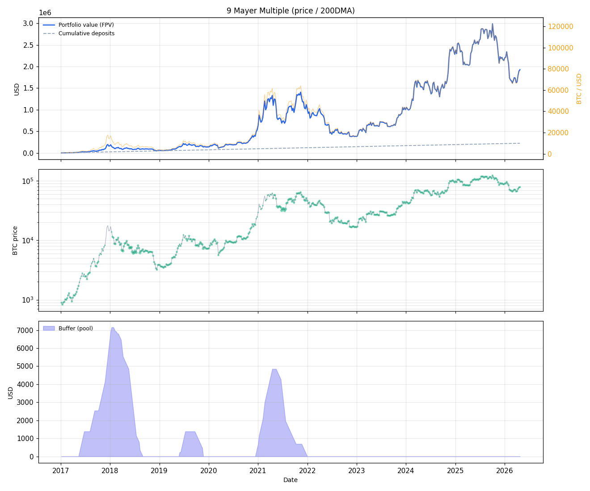
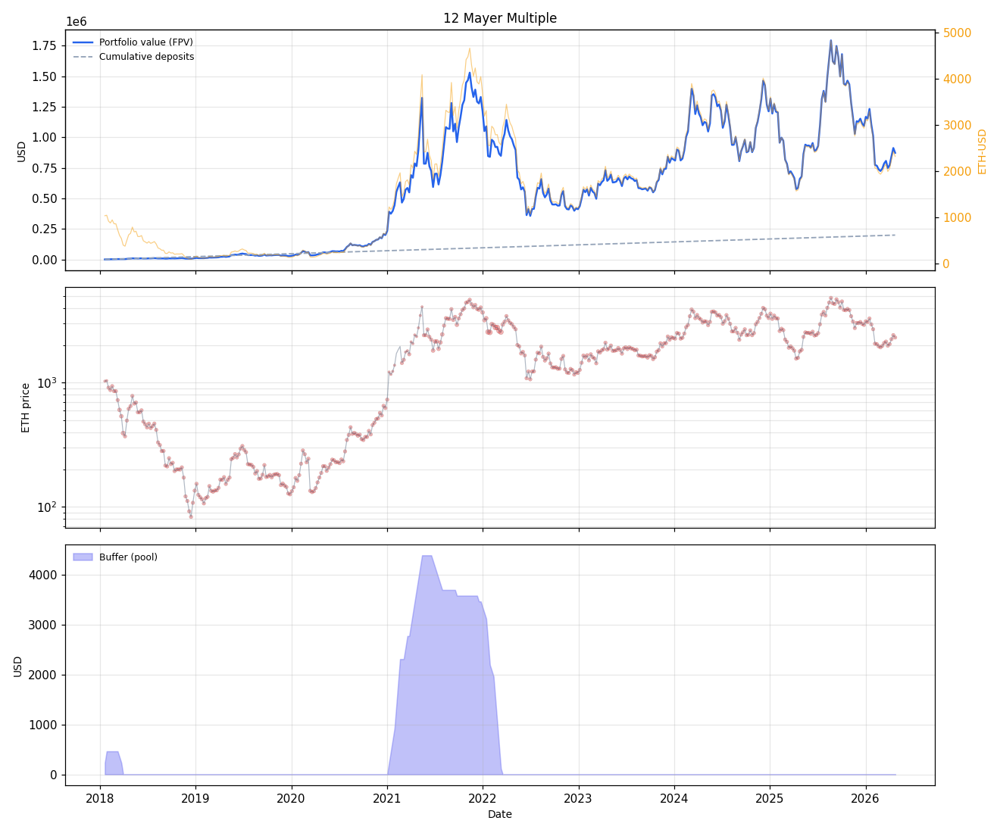
Mayer Multiple = price / SMA(200, daily). 200-дневная MA — классический индикатор долгосрочного тренда. mm > 2.4 (BTC) / 2.8 (ETH) исторически маркер циклического пика. Мультипликаторы: <0.8 — 2x, 0.8-1.2 — 1.25x, 1.2-1.8 — 1x, 1.8-2.4 — 0.5x, ≥2.4 — 0x (пауза). Более быстрый и «шумный» сигнал чем MVRV Z (работает на цене а не on-chain). Пороги калиброваны на исторических циклах.
Механика: mm = price / SMA(200, daily). Множитель по зонам mm, клип на cap.
Mayer Multiple
Классический индикатор: Mayer Multiple < 0.8 — покупаю 2x, > 2.4 — пауза
Mayer Multiple = price / SMA(200, daily). 200-дневная MA — классический индикатор долгосрочного тренда. mm > 2.4 (BTC) / 2.8 (ETH) исторически маркер циклического пика. Мультипликаторы: <0.8 — 2x, 0.8-1.2 — 1.25x, 1.2-1.8 — 1x, 1.8-2.4 — 0.5x, ≥2.4 — 0x (пауза). Более быстрый и «шумный» сигнал чем MVRV Z (работает на цене а не on-chain). Пороги калиброваны на исторических циклах.
Механика: mm = price / SMA(200, daily). Множитель по зонам mm, клип на cap.
Merge Regime
До 15.09.2022 — стандартный Mayer. После Мерджа — Mayer с бонусом дефляционного дисконта
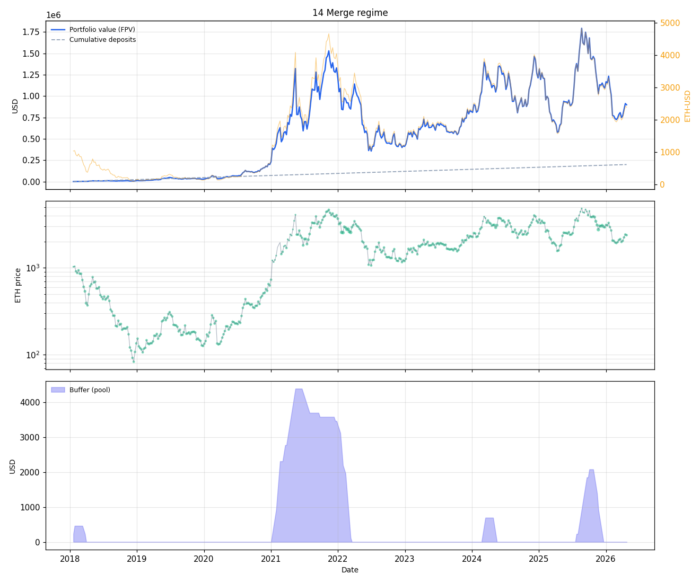
The Merge (15.09.2022) — смена режима ETH: PoW → PoS, изменение инфляции с ~4.3%/год на возможную дефляцию. Пост-Merge ETH фундаментально другой актив. Стратегия накапливает буфер в бычьи периоды по стандартному Mayer Multiple (≡ #12), а после Merge — использует Mayer с повышенным бакетом [0.8, 1.2) = 1.5x (дефляционная премия) и пониженным порогом сохранения (saving начинается с mm=1.5 вместо 2.0, так как post-Merge ETH mm редко превышает 2.0). Финальный cutoff 0.25x (не 0x) — дефляционный актив не оставляется в полном паузе.
Механика: Pre-Merge (< 2022-09-15): стандартный Mayer (#12). Post-Merge: Mayer с премией [0.8,1.2)=1.5x и saving с mm=1.5.
Merge Regime
До 15.09.2022 — стандартный Mayer. После Мерджа — Mayer с бонусом дефляционного дисконта
The Merge (15.09.2022) — смена режима ETH: PoW → PoS, изменение инфляции с ~4.3%/год на возможную дефляцию. Пост-Merge ETH фундаментально другой актив. Стратегия накапливает буфер в бычьи периоды по стандартному Mayer Multiple (≡ #12), а после Merge — использует Mayer с повышенным бакетом [0.8, 1.2) = 1.5x (дефляционная премия) и пониженным порогом сохранения (saving начинается с mm=1.5 вместо 2.0, так как post-Merge ETH mm редко превышает 2.0). Финальный cutoff 0.25x (не 0x) — дефляционный актив не оставляется в полном паузе.
Механика: Pre-Merge (< 2022-09-15): стандартный Mayer (#12). Post-Merge: Mayer с премией [0.8,1.2)=1.5x и saving с mm=1.5.
Momentum Reversion
После красной недели покупаю больше, после зелёной — меньше. Контрариан в чистом виде
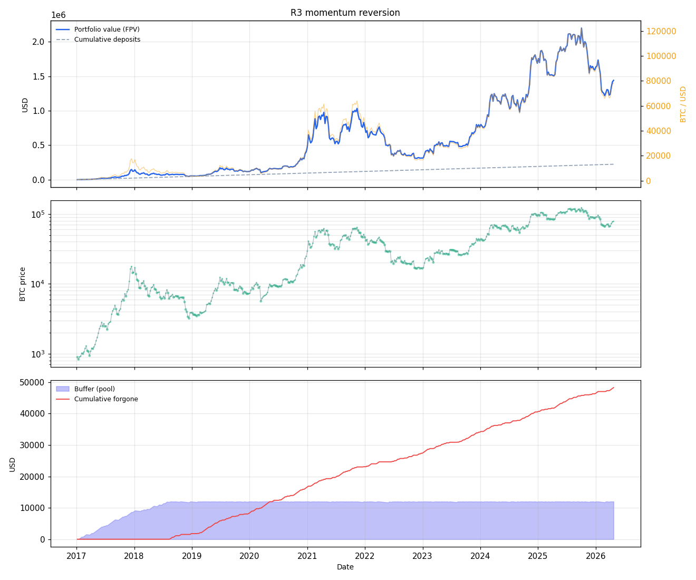
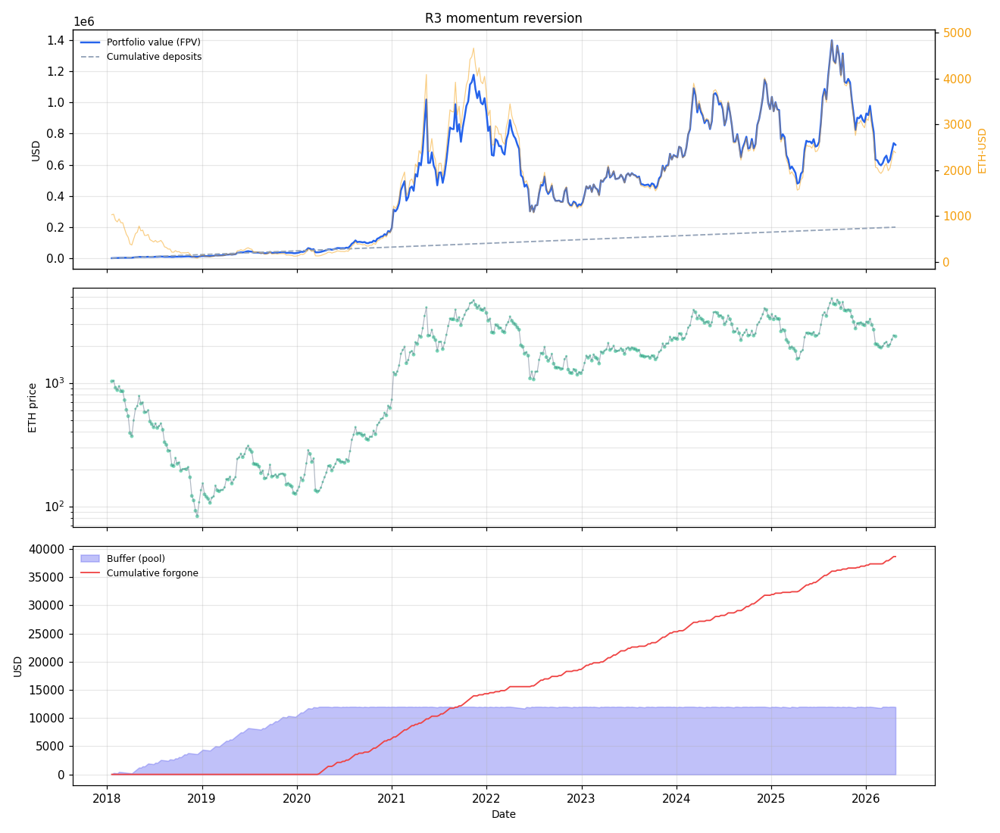
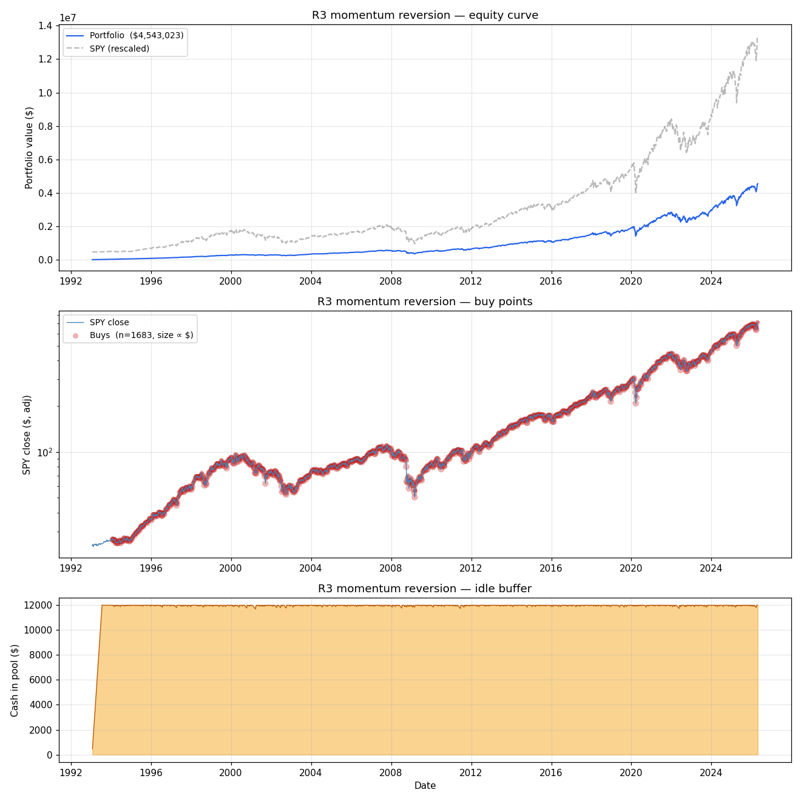
Простой контрариан: смотрим знак закрытия прошлой недели и по нему выбираем размер покупки. Прошлая неделя красная — покупаем большую сумму ($500), плоская — среднюю ($300), зелёная — минимум ($200). Buy weakness — покупай после падения, не после роста. Работает стабильно, близко к pure DCA. Простейший сигнал даёт понятный эффект без больших провалов и без нужды в сложных индикаторах.
Механика: WoW<0 (красная): $500 * scale; WoW≈0: $300; WoW>0: $200. Клип на cap.
Momentum Reversion
После красной недели покупаю больше, после зелёной — меньше. Контрариан в чистом виде
Простой контрариан: смотрим знак закрытия прошлой недели и по нему выбираем размер покупки. Прошлая неделя красная — покупаем большую сумму ($500), плоская — среднюю ($300), зелёная — минимум ($200). Buy weakness — покупай после падения, не после роста. Работает стабильно, близко к pure DCA. Простейший сигнал даёт понятный эффект без больших провалов и без нужды в сложных индикаторах.
Механика: WoW<0 (красная): $500 * scale; WoW≈0: $300; WoW>0: $200. Клип на cap.
MVRV Z-gated
Использую on-chain индикатор MVRV Z — при капитуляции (Z<0) покупаю 2.5x, на пике (Z>7) — 0.25x
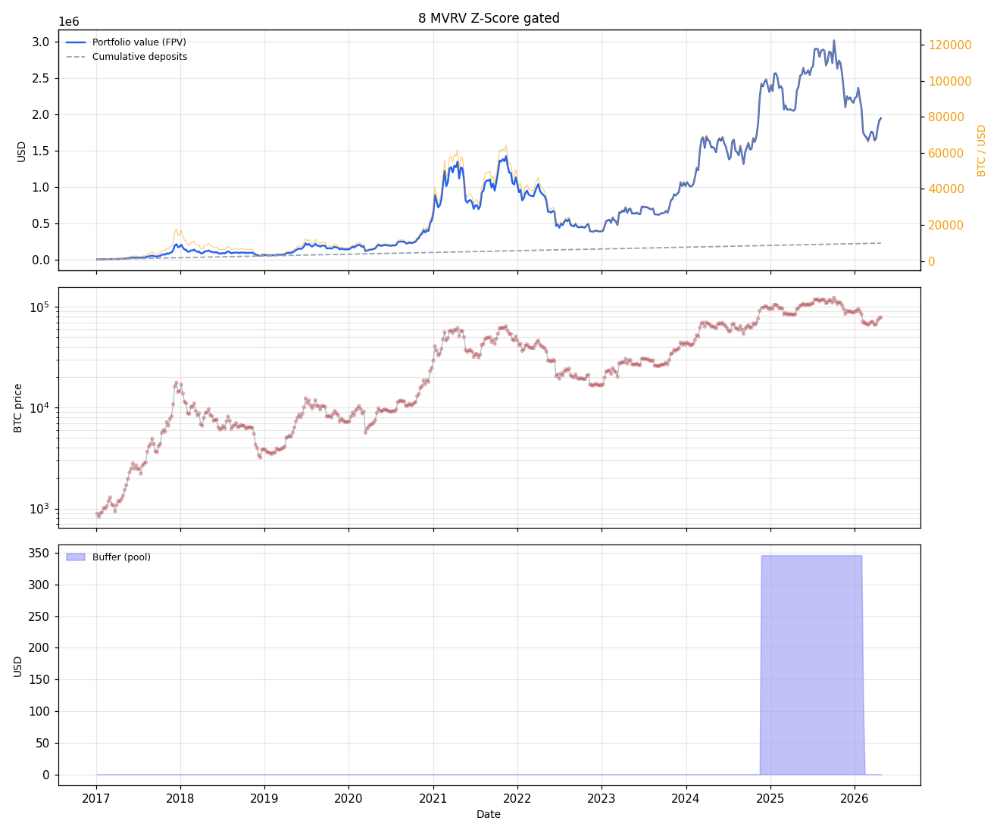
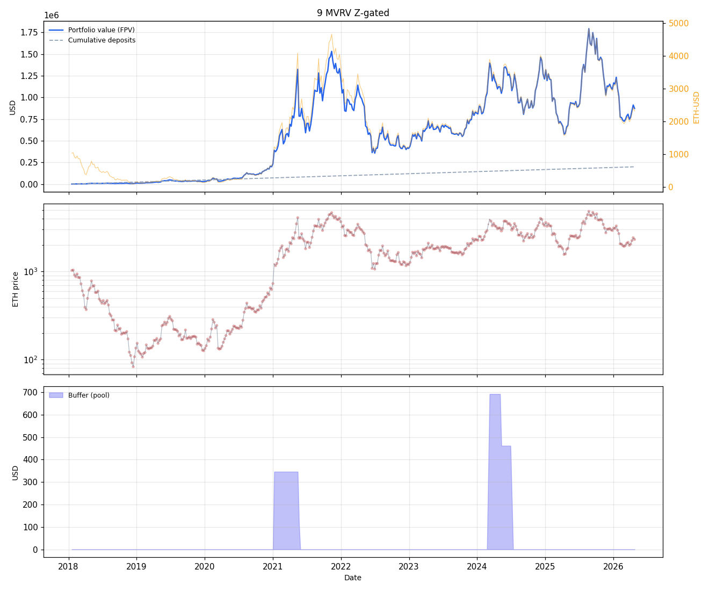
Гейтинг по MVRV Z-Score: on-chain метрика «насколько сеть переоценена относительно того, сколько за монеты было уплачено». Z = (MarketCap − RealizedCap) / stddev(MC−RC, 365d). Зелёная зона (Z<0) исторически совпадает с циклическими днами, красная (Z>7) — с пиками. Мультипликаторы: Z<0 — 2.5x (капитуляция), [0,2) — 1.5x, [2,7) — 1x нейтраль, Z>7 — 0.25x (эйфория/пик). ETH использует более низкий cutoff (Z≥5) — ETH пики ниже BTC. Данные из CoinMetrics Community API.
Механика: Множитель × базовая сумма, где множитель зависит от MVRV Z бакета.
MVRV Z-gated
Использую on-chain индикатор MVRV Z — при капитуляции (Z<0) покупаю 2.5x, на пике (Z>7) — 0.25x
Гейтинг по MVRV Z-Score: on-chain метрика «насколько сеть переоценена относительно того, сколько за монеты было уплачено». Z = (MarketCap − RealizedCap) / stddev(MC−RC, 365d). Зелёная зона (Z<0) исторически совпадает с циклическими днами, красная (Z>7) — с пиками. Мультипликаторы: Z<0 — 2.5x (капитуляция), [0,2) — 1.5x, [2,7) — 1x нейтраль, Z>7 — 0.25x (эйфория/пик). ETH использует более низкий cutoff (Z≥5) — ETH пики ниже BTC. Данные из CoinMetrics Community API.
Механика: Множитель × базовая сумма, где множитель зависит от MVRV Z бакета.
NUPL-gated
NUPL < 0 (сеть в убытке) — покупаю 3x. NUPL > 0.75 (все в эйфории) — 0.25x
NUPL = (MarketCap − RealizedCap) / MarketCap — какая доля сети в данный момент в прибыли. NUPL > 0.75 = 75% холдеров в плюсе = исторический пик эйфории. NUPL < 0 = вся сеть в убытке = капитуляция. Мультипликаторы: <0 — 3x (капитуляция), [0, 0.5) — 1x нейтраль, [0.5, 0.75) — 0.5x, >0.75 — 0.25x эйфория. Частично коррелирует с MVRV Z (обе метрики из MC/RC). Данные из CoinMetrics. ETH использует более консервативный upper cutoff 0.70.
Механика: Множитель × базовая сумма, где множитель зависит от NUPL бакета. NUPL = 1 − 1/MVRV_ratio.
NUPL-gated
NUPL < 0 (сеть в убытке) — покупаю 3x. NUPL > 0.75 (все в эйфории) — 0.25x
NUPL = (MarketCap − RealizedCap) / MarketCap — какая доля сети в данный момент в прибыли. NUPL > 0.75 = 75% холдеров в плюсе = исторический пик эйфории. NUPL < 0 = вся сеть в убытке = капитуляция. Мультипликаторы: <0 — 3x (капитуляция), [0, 0.5) — 1x нейтраль, [0.5, 0.75) — 0.5x, >0.75 — 0.25x эйфория. Частично коррелирует с MVRV Z (обе метрики из MC/RC). Данные из CoinMetrics. ETH использует более консервативный upper cutoff 0.70.
Механика: Множитель × базовая сумма, где множитель зависит от NUPL бакета. NUPL = 1 − 1/MVRV_ratio.
Pi Cycle Avoid
Если сработал классический Pi Cycle Top сигнал — 4 недели не покупаю. Остальное время как обычный DCA
Pi Cycle Top — классический BTC-сигнал. Если 111-дневная MA пересекает (350-дневную MA × 2) сверху — это сигнал циклического пика. Исторически срабатывал в пиках декабря 2013, декабря 2017, апреля 2021 — 3 из 3 раз. Стратегия: на сработавший сигнал ставим паузу на 4 пятницы. Остальное время — чистый DCA. Выборка крошечная (3 сигнала за 13 лет), сигнал может не сработать в будущем.
Механика: Сигнал: SMA(111, daily) пересекла SMA(350, daily)×2 сверху → пауза 4 недели.
Pi Cycle Avoid
Если сработал классический Pi Cycle Top сигнал — 4 недели не покупаю. Остальное время как обычный DCA
Pi Cycle Top — классический BTC-сигнал. Если 111-дневная MA пересекает (350-дневную MA × 2) сверху — это сигнал циклического пика. Исторически срабатывал в пиках декабря 2013, декабря 2017, апреля 2021 — 3 из 3 раз. Стратегия: на сработавший сигнал ставим паузу на 4 пятницы. Остальное время — чистый DCA. Выборка крошечная (3 сигнала за 13 лет), сигнал может не сработать в будущем.
Механика: Сигнал: SMA(111, daily) пересекла SMA(350, daily)×2 сверху → пауза 4 недели.
Tiered DCA (52w-based)
Простые ступеньки: чем глубже просадка, тем больше множитель — 1x/2x/4x/5x
Ступенчатая стратегия: дискретные пороги вместо формулы. DD<30% — 1x базовой суммы, 30-50% — 2x, 50-70% — 4x, ≥70% — 5x (всегда клипается на cap). Проще объяснить и реализовать руками, чем формулу. При неглубоких просадках часто вырождается в B1 (режим 1x занимает большую часть времени). Проявляет преимущество только на глубоких просадках. Простой ручной вариант для дисциплинированного инвестора.
Механика: DD<30%: 1x, [30,50): 2x, [50,70): 4x, ≥70: 5x — всё клипается на cap
Tiered DCA (52w-based)
Простые ступеньки: чем глубже просадка, тем больше множитель — 1x/2x/4x/5x
Ступенчатая стратегия: дискретные пороги вместо формулы. DD<30% — 1x базовой суммы, 30-50% — 2x, 50-70% — 4x, ≥70% — 5x (всегда клипается на cap). Проще объяснить и реализовать руками, чем формулу. При неглубоких просадках часто вырождается в B1 (режим 1x занимает большую часть времени). Проявляет преимущество только на глубоких просадках. Простой ручной вариант для дисциплинированного инвестора.
Механика: DD<30%: 1x, [30,50): 2x, [50,70): 4x, ≥70: 5x — всё клипается на cap
Value Averaging
Целюсь в растущую траекторию портфеля — если отстаём, докупаю больше; если опережаем — не покупаю
Value Averaging по Edleson (1993): вместо фиксированного вклада берём фиксированную ЦЕЛЬ портфеля, которая растёт по формуле. Каждый бар считаем gap = цель − текущая стоимость; если отстаём — докупаем чтобы сравняться. Если опережаем — не покупаем вовсе. В BTC/ETH с резким ростом целевая траектория почти всегда ниже фактического капитала — стратегия редко заставляет покупать больше обычного, часто вырождается в B1. Но на просадках создаёт большой gap и разворачивает буфер активно.
Механика: path_t = deposit × ((1+g)^t − 1)/g; gap = max(0, path − equity); buy = min(gap, available, cap)
Value Averaging
Целюсь в растущую траекторию портфеля — если отстаём, докупаю больше; если опережаем — не покупаю
Value Averaging по Edleson (1993): вместо фиксированного вклада берём фиксированную ЦЕЛЬ портфеля, которая растёт по формуле. Каждый бар считаем gap = цель − текущая стоимость; если отстаём — докупаем чтобы сравняться. Если опережаем — не покупаем вовсе. В BTC/ETH с резким ростом целевая траектория почти всегда ниже фактического капитала — стратегия редко заставляет покупать больше обычного, часто вырождается в B1. Но на просадках создаёт большой gap и разворачивает буфер активно.
Механика: path_t = deposit × ((1+g)^t − 1)/g; gap = max(0, path − equity); buy = min(gap, available, cap)
VIX-Gated
VIX > 30 (страх на рынке) — покупаю 2x. VIX < 15 (complacency) — 0.5x
VIX — классический «индекс страха» (implied volatility S&P 500). VIX > 30 = страх = скидка. VIX < 15 = complacency = потенциальный пузырь. Классический fear/greed сигнал. Мультипликаторы: <15 — 0.5x, [15,22) — 1x, [22,30) — 1.5x, [30,40) — 2x, ≥40 — 2.5x. На NDX за 27 лет недотянул до B1 по IRR — VIX <15 часто совпадал с сильным буллраном (2017, 2024+) и стратегия недоинвестировала. Classic signal error — не всякая статистическая регулярность даёт alpha. Данные daily close из CBOE.
Механика: Множитель × база по бакетам VIX (CBOE daily close).
VIX-Gated
VIX > 30 (страх на рынке) — покупаю 2x. VIX < 15 (complacency) — 0.5x
VIX — классический «индекс страха» (implied volatility S&P 500). VIX > 30 = страх = скидка. VIX < 15 = complacency = потенциальный пузырь. Классический fear/greed сигнал. Мультипликаторы: <15 — 0.5x, [15,22) — 1x, [22,30) — 1.5x, [30,40) — 2x, ≥40 — 2.5x. На NDX за 27 лет недотянул до B1 по IRR — VIX <15 часто совпадал с сильным буллраном (2017, 2024+) и стратегия недоинвестировала. Classic signal error — не всякая статистическая регулярность даёт alpha. Данные daily close из CBOE.
Механика: Множитель × база по бакетам VIX (CBOE daily close).
Volatility-Scaled
Размер покупки обратно пропорционален 30-дневной волатильности: тихо — покупаю больше
Объём покупки обратно пропорционален 30-дневной реализованной волатильности. Логика: высокая волатильность = неопределённость, низкая волатильность = устаканилось. Стратегия делает НАОБОРОТ типичной криптоинтуиции — покупает больше когда спокойно. Раw = 1 / annualized_vol(30d), нормализуем на expanding-window так чтобы средняя за историю = базовому депозиту. На большинстве активов результат близок к B1 — волатильность не даёт сильного сигнала.
Механика: raw = 1 / annualized_vol(30d), нормализуем expanding-window к базе, клип [min, cap]
Volatility-Scaled
Размер покупки обратно пропорционален 30-дневной волатильности: тихо — покупаю больше
Объём покупки обратно пропорционален 30-дневной реализованной волатильности. Логика: высокая волатильность = неопределённость, низкая волатильность = устаканилось. Стратегия делает НАОБОРОТ типичной криптоинтуиции — покупает больше когда спокойно. Раw = 1 / annualized_vol(30d), нормализуем на expanding-window так чтобы средняя за историю = базовому депозиту. На большинстве активов результат близок к B1 — волатильность не даёт сильного сигнала.
Механика: raw = 1 / annualized_vol(30d), нормализуем expanding-window к базе, клип [min, cap]
200WMA Heatmap
Ниже 200-недельной MA — 3x (дно цикла). Сильно выше (r>3.5) — 0x пауза, пик
200-недельная WMA — ключевой «пол» бычьего рынка в BTC (и ETH). Когда цена уходит ниже — исторически капитуляция. Считаем r = price / wma200w. Мультипликаторы: r<1 — 3x (дно цикла), [1,1.5) — 2x, [1.5,2.5) — 1x, [2.5,3.5) — 0.5x, >3.5 — 0x (пик). ETH использует расширенный порог ≥5.0 для «пика» (2017-уровень пузыря). Требует ~4 года истории для warmup; на коротком MAIN (4.5 года) warmup занимает большую часть периода. На длинной истории один из сильнейших циклических сигналов.
Механика: r = price / WMA(200, weekly). Множитель по зонам r.
200WMA Heatmap
Ниже 200-недельной MA — 3x (дно цикла). Сильно выше (r>3.5) — 0x пауза, пик
200-недельная WMA — ключевой «пол» бычьего рынка в BTC (и ETH). Когда цена уходит ниже — исторически капитуляция. Считаем r = price / wma200w. Мультипликаторы: r<1 — 3x (дно цикла), [1,1.5) — 2x, [1.5,2.5) — 1x, [2.5,3.5) — 0.5x, >3.5 — 0x (пик). ETH использует расширенный порог ≥5.0 для «пика» (2017-уровень пузыря). Требует ~4 года истории для warmup; на коротком MAIN (4.5 года) warmup занимает большую часть периода. На длинной истории один из сильнейших циклических сигналов.
Механика: r = price / WMA(200, weekly). Множитель по зонам r.
Yield Curve Aware
Инверсия 10Y-2Y — 0.5x пауза (ждём рецессию). В первые 18 месяцев после инверсии — 2x (дно рецессии)
Инверсия yield curve (T10Y2Y < 0) исторически предсказывает рецессию за 12-24 месяца. Стратегия: во время инверсии — 0.5x (пауза, накапливаем). В течение 18 месяцев после первой инверсии — 2x (ждём дна рецессии, покупаем больше). В остальное время — 1x (базовый DCA). На NDX результат близкий к B1 — инверсии редкие (4 за 27 лет), стратегия редко отклоняется от pure DCA. Иллюстративный сигнал, не статистически сильный из-за малой выборки. Данные daily из Treasury.gov (10Y − 2Y spread).
Механика: T10Y2Y<0: 0.5x. В 18 мес после инверсии: 2x. Иначе: 1x.
Yield Curve Aware
Инверсия 10Y-2Y — 0.5x пауза (ждём рецессию). В первые 18 месяцев после инверсии — 2x (дно рецессии)
Инверсия yield curve (T10Y2Y < 0) исторически предсказывает рецессию за 12-24 месяца. Стратегия: во время инверсии — 0.5x (пауза, накапливаем). В течение 18 месяцев после первой инверсии — 2x (ждём дна рецессии, покупаем больше). В остальное время — 1x (базовый DCA). На NDX результат близкий к B1 — инверсии редкие (4 за 27 лет), стратегия редко отклоняется от pure DCA. Иллюстративный сигнал, не статистически сильный из-за малой выборки. Данные daily из Treasury.gov (10Y − 2Y spread).
Механика: T10Y2Y<0: 0.5x. В 18 мес после инверсии: 2x. Иначе: 1x.